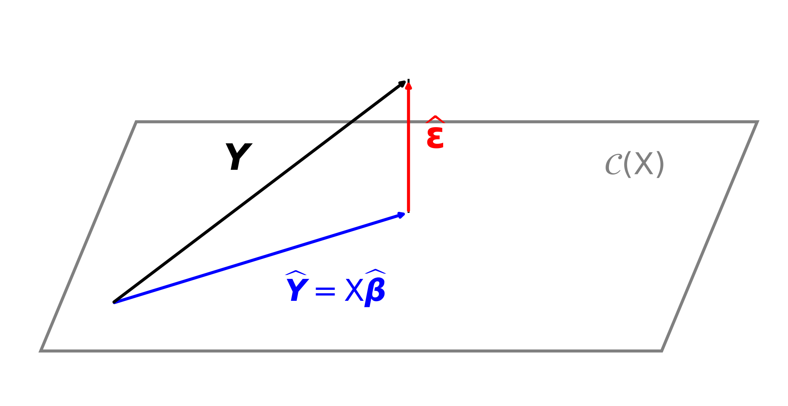
MATH 563 — Mathematical Statistics · Spring 2027
Spring 2026 material · revision for Spring 2027 pending
Linear Models
Casella & Berger Ch. 11
Test 2 on 4/7 on
Optimality of Estimators,
Hypothesis Testing, &
Ordinary Least Squares Through Inference
Fred J. Hickernell
September 19, 2026
Linear Models
Until now
We have been focused on inference for population parameters, such as \(\mu\), \(\sigma^2\), \(p\), \(\lambda\), …
Nothing influenced our random variable \(Y\) except for the randomness in the data generating process
Moving forward
Response/Output/Dependent Variable \(Y\)
Explained/Predicted by a vector of Predictors/Explanatory Variables/Inputs/Independent Variables \(\vx\)
The \(x_j\) may be
Functions of other variables or each other
Categorical variables encoded as dummy variables
\(\Ex(Y \mid \vx)\) depends on \(\vx\) through a linear function \(\vx^\top \vbeta\), where \(\vbeta\) is a vector of unknown parameters
Types of linear models
Ordinary least squares (OLS) \(Y = \vx^\top \vbeta + \varepsilon\) with \(\Ex(\varepsilon) = 0\) and \(\cov(\varepsilon) = \sigma^2 \mI\)
One-way analysis of variance (ANOVA) \(Y_{ij} = \mu_i + \varepsilon_{ij}\) with \(\Ex(\varepsilon_{ij}) = 0\) and \(\cov(\varepsilon_{ij}) = \sigma^2 \mI\)
Logistic regression and other generalized linear models
Gaussian process regression non-parametric method where \(Y = f(\vx) + \varepsilon\) with \(\Ex(\varepsilon) = 0\) and \(\cov(\varepsilon) = \sigma^2 \mI\) and \(f\) is a Gaussian process with mean function \(m\) defined as \(m(\vx) = \vx^\top \vbeta\) and covariance function \(K\) where \(K(\vx,\vt)\) may depend on hyperparameters \(\vtheta\)
Comparison of inference for linear models and population parameters
| Linear models | Population parameters | |
|---|---|---|
| Model | \(Y = \vx^\top \vbeta + \varepsilon\), \(\Ex(\varepsilon) = 0\), \(\var(\varepsilon) = \sigma^2\) \(\Ex(Y) = \vx^\top \vbeta =: \mu(\vx)\) |
\(Y \sim \Bern(p)\), \(Y \sim \Exp(\lambda)\), \(Y \sim \Norm(\mu,\sigma^2)\), … |
| Parameters | \(\vbeta \in \reals^d\) | \(\mu\), \(\sigma^2\), \(p\), \(\lambda\) |
| Fixed | \(\vx\) | |
| Random | \(Y\), \(\varepsilon\) | \(Y\) |
| Data | \((\vx_1,Y_1),\dots,(\vx_n,Y_n)\) | \(Y_1,\dots,Y_n\) |
| Model with data | \(Y_i = \vx_i^\top \vbeta + \varepsilon_i\) \(\underbrace{\vY}_{n \times 1} = \underbrace{\mX}_{n \times d}\, \underbrace{\vbeta}_{d \times 1} + \underbrace{\vveps}_{n \times 1}\) |
\(Y_i \sim \Bern(p)\), \(Y_i \sim \Exp(\lambda)\), \(Y_i \sim \Norm(\mu,\sigma^2)\), … |
| Not observable | \(\varepsilon_1,\dots,\varepsilon_n\) |
| Linear models | Population parameters | |
|---|---|---|
| Model | \(Y = \vx^\top \vbeta + \varepsilon\), \(\Ex(\varepsilon) = 0\), \(\var(\varepsilon) = \sigma^2\) \(\Ex(Y) = \vx^\top \vbeta =: \mu(\vx)\) |
\(Y \sim \Bern(p)\), \(Y \sim \Exp(\lambda)\), \(Y \sim \Norm(\mu,\sigma^2)\), … |
| Model with data | \(Y_i = \vx_i^\top \vbeta + \varepsilon_i\) \(\underbrace{\vY}_{n \times 1} = \underbrace{\mX}_{n \times d}\, \underbrace{\vbeta}_{d \times 1} + \underbrace{\vveps}_{n \times 1}\) |
\(Y_i \sim \Bern(p)\), \(Y_i \sim \Exp(\lambda)\), \(Y_i \sim \Norm(\mu,\sigma^2)\), … |
| Point estimators | \(\hbeta = (\mX^\top \mX)^{-1} \mX^\top \vY\), \(\hvY = \mX \hbeta\) | \(\barY\), \(S^2\), \(\hlambda_{\MLE}\), \(\hp_{\MLE}\), … |
| Confidence/ prediction regions for | \(\vbeta\), \(\mu(\vx)\), \(Y \mid \vx\) | \(\mu\), \(\sigma^2\), \(p\), \(\lambda\), \(Y\) |
Parameters: truth, candidates, and estimates
A parameter symbol often has two jobs:
\(\vbeta\) in the model represents the unknown truth
\(\vbeta\) in the likelihood is a candidate value we try out
To avoid clutter, we usually write
the model as \(\vY \sim f(\vy \mid \vbeta)\) and
the likelihood as \(L(\vbeta \mid \vy) = f(\vy \mid \vbeta)\)
Then the maximum likelihood estimate is \(\hvbeta = \argmax_{\vbeta \in \ct} L(\vbeta \mid \vy)\)
When the distinction matters, write the true value explicitly:
\[ \hvbeta \approx \vbeta_{\text{true}}, \qquad \hvbeta \pto \vbeta_{\text{true}} \]
The same symbol \(\vbeta\) can mean “the true parameter” or “a candidate value”
Context tells us which role it is playing
Random data vs observed data
Before observing data use upper case for random variables: $ = \[\begin{pmatrix} Y_1\\ \vdots\\ Y_n \end{pmatrix}\]$
After observing use lowercase: \(\displaystyle \vy = \begin{pmatrix} y_1\\ \vdots\\ y_n \end{pmatrix}\)
The likelihood from the observed data: \(L(\vbeta \mid \vy) = f(\vy \mid \vbeta)\), \(\hat{\vbeta}(\vy) = \argmax_{\vbeta \in \ct} L(\vbeta \mid \vy)\)
Sampling distributions and asymptotic results are statements about random data: \[ \hat{\vbeta}(\vY) = \argmax_{\vbeta \in \ct} L(\vbeta \mid \vY), \quad \text{e.g., } 2\left[ \ell(\hvbeta_{\text{full}}(\vY) \mid \vY) - \ell(\hvbeta_{\text{red}}(\vY) \mid \vY) \right] \appxsim \chi^2_{\text{df}} \]
Use lowercase data to compute the estimate you actually report
Use uppercase random data when describing what would happen under repeated sampling
Estimator vs estimate
An estimator is a function of random data, e.g., \(\hat{\vbeta}(\vY)\) depends on \(\vY\) → random quantity
An estimate is the realized value after observing data, e.g., \(\hat{\vbeta}(\vy)\) depends on \(\vy\) → fixed number
Same formula, different roles
\[\begin{gather*} \hvbeta = \argmax_{\vbeta} L(\vbeta \mid \vY) \quad \text{(estimator)} \\ \hvbeta = \arg\max_{\vbeta \in \ct} L(\vbeta \mid \vy) \quad \text{(estimate)} \end{gather*}\]
Before observing data: \(\hvbeta(\vY)\) is random
After observing data: \(\hvbeta(\vy)\) is a number
Least Squares Linear Regression
(CB §11.3; WMS §11.3–11.4, 11.10–11.11)
Model: \(Y = \underbrace{\vx^\top \vbeta}_{\mu(\vx)} + \varepsilon \quad\) with \(\Ex(\varepsilon)=0\), \(\var(\varepsilon)=\sigma^2\)
- \(x_j\) may be a variable or a function of variables
Model with data: $ ^{} = ^{}, ^{} + ^{} $
- \(\mX\) is fixed and has full column rank (must have \(n \ge d\))
Estimation of \(\vbeta\) by least squares
\[ \argmin_{\vb \in \reals^d} \lVert \vY - \mX \vb \rVert^2 = (\mX^\top \mX)^{-1} \mX^\top \vY =: \hvbeta \]
Proof
Let \(\hvbeta\) be defined as above, and let \(\vb\) be any other vector in \(\reals^d\): \[\begin{align*} \lVert \vY - \mX \vb \rVert^2 & = \lVert (\vY - \mX \hvbeta) + \mX (\hvbeta - \vb) \rVert^2 \\ & = \lVert \vY - \mX \hvbeta \rVert^2 + 2 (\hvbeta - \vb)^\top \class{alert}{\mX^\top (\vY - \mX \hvbeta)} + \lVert \mX (\hvbeta - \vb) \rVert^2 \\ & = \lVert \vY - \mX \hvbeta \rVert^2 + 2 (\hvbeta - \vb)^\top \class{alert}{\mX^\top (\vY - \mX (\mX^\top \mX)^{-1} \mX^\top \vY)} + \lVert \mX (\hvbeta - \vb) \rVert^2 \\ & = \lVert \vY - \mX \hvbeta \rVert^2 + 2 (\hvbeta - \vb)^\top \class{alert}{[\mX^\top \vY - \mX^\top \mX (\mX^\top \mX)^{-1} \mX^\top \vY]} + \lVert \mX (\hvbeta - \vb) \rVert^2 \\ & = \lVert \vY - \mX \hvbeta \rVert^2 + \lVert \mX (\hvbeta - \vb) \rVert^2 \ge \lVert \vY - \mX \hvbeta \rVert^2 \end{align*}\]
Furthermore,
\(\hmu(\vx) := \vx^\top \hvbeta\) is an estimator of \(\mu(\vx) := \Ex(Y \mid \vx) = \vx^\top \vbeta\)
\(\hvY : = \mX \hvbeta = \underbrace{\mX (\mX^\top \mX)^{-1} \mX^\top}_{\href{https://en.wikipedia.org/wiki/Projection_matrix}{\text{projection matrix }} \mP} \vY\) is an estimator of \(\mu(\vX) = \Ex(\vY)\)
\(\mP\) is the projection matrix (also called the hat matrix) from \(\reals^n\) onto \[ \cc(\mX):= \text{ the column space of } \mX = \text{ the set of all linear combinations of the columns of } \mX = \{ \mX \vb : \vb \in \reals^d \} \] This means that
- \(\mP^2 = \mP\) (idempotent)
- \(\mP\) has only the eigenvalues \(0\) (multiplicity \(n-d\)) and \(1\) (multiplicity \(d\))
- \(\mP^\top = \mP\) (symmetric)
- \(\mP \mX = \mX\) (projection onto \(\cc(\mX)\), columns of \(\mX\) are eigenvectors of \(\mP\) with eigenvalue \(1\))
- \((\mI - \mP) \mX = \mzero\) (projection onto the orthogonal complement of \(\cc(\mX)\) )
- \(\mP^2 = \mP\) (idempotent)
\(\hvveps : = \vY - \hvY = (\mI - \mP) \vY\) is the vector of residuals,
- Orthogonal to all columns of \(\mX\), i.e., orthogonal to \(\cc(\mX)\)
Geometric interpretation of least squares regression
Unbiasedness of estimators
Recall that \(Y = \mX \vbeta + \vveps\) with \(\Ex(\vveps)=0\), \(\cov(\vveps)=\sigma^2 \mI\), where \(\mX\) is fixed and of full column rank
Unbiasedness of \(\hvbeta\) and \(\hmu(\vx)\)
\[\begin{align*} \hvbeta & := (\mX^\top \mX)^{-1} \mX^\top \vY = (\mX^\top \mX)^{-1} \mX^\top \left(\mX \vbeta + \vveps\right) = \vbeta + (\mX^\top \mX)^{-1} \mX^\top \vveps \\ \implies \Ex(\hvbeta) & = \vbeta \qquad \text{so $\hvbeta$ is \class{alert}{unbiased}} \\[12pt] \hmu(\vx) & := \vx^\top \hvbeta = \vx^\top \vbeta + \vx^\top (\mX^\top \mX)^{-1} \mX^\top \vveps \\ \implies \Ex(\hmu(\vx)) &= \vx^\top \vbeta = \mu(\vx) \qquad \text{so $\hmu(\vx)$ is \class{alert}{unbiased}} \\[12pt] \hvveps &: = \underbrace{\vY}_{\text{data}} - \underbrace{\hvY}_{\text{fit}} = (\mI-\mP)\vY, \qquad \mP := \mX(\mX^\top \mX)^{-1}\mX^\top \\ & = (\mI-\mP)(\mX \vbeta + \vveps) = (\mI-\mP)\vveps \qquad \text{since $(\mI-\mP)\mX = \mzero$} \\ \implies \Ex(\hvveps) & = \vzero \end{align*}\]
Residual sum of squares and unbiased estimation of \(\sigma^2\)
Since \(\hvveps = (\mI-\mP)\vveps\), it follows that \[\begin{equation*} \Ex\bigl(\lVert \hvveps \rVert^2\bigr) = \Ex\bigl(\vveps^\top (\mI-\mP)\vveps\bigr) \\ = \sigma^2 \trace(\mI-\mP) = \sigma^2 (n - \trace(\mP)) \end{equation*}\]
Now \(\mP\) is a projection matrix onto \(\cc(\mX)\), it has eigenvalues of \(0\) and \(1\) only, so \[ \trace(\mP)= \text{ sum of the eigenvalues of } \mP = \rank(\mP)=\rank(\mX)=d \]
Therefore $(^2) = ^2 (n-d) $ and so \[\begin{multline*} S^2 := \frac 1{n-d} \sum_{i=1}^{n} \lvert Y_i - \vx_i^\top \hvbeta \rvert^2 = \frac{\lVert \hvveps \rVert^2}{n-d} = \frac{\lVert (\mI-\mP)\vY \rVert^2 }{n-d} = \frac{\lVert (\mI-\mP)\vveps \rVert^2 }{n-d} \\ \text{is an \class{alert}{unbiased} estimator of $\sigma^2$} \end{multline*}\]
Inference for regression parameters and predictions assuming \(\vveps \sim \Norm(\vzero,\sigma^2 \mI)\)
(CB §11.3; WMS §11.4–11.7, 11.12–11.13)
So far, we have only used the assumptions that
- \(\mX\) is fixed and of full column rank
- \(\Ex(\vveps)=\vzero\) and \(\cov(\vveps)=\sigma^2 \mI\)
Going forward, we assume that \(\vveps \sim \Norm(\vzero,\sigma^2 \mI)\). This allows us to
- Make probabilistic statements about the estimators \(\hvbeta\) and \(\hmu(\vx)\)
- Construct confidence intervals and bands for \(\vbeta\), \(\mu(\vx)\), and \(\sigma^2\)
- Construct prediction intervals and bands for \(Y \mid \vx\)
- Perform hypothesis tests about \(\vbeta\) and \(\mu(\vx)\)
- Assess model fit and compare models
Confidence regions for \(\vbeta\) and \(\mu(\vx)\) assuming \(\vveps \sim \Norm(\vzero,\sigma^2 \mI)\)
Since a linear combination of normal random variables is normal, the following data-based quantities are all normally distributed:
\(\vY = \mX \vbeta + \vveps \sim \Norm(\mX\vbeta,\sigma^2 \mI)\)
\(\hvbeta = (\mX^\top \mX)^{-1} \mX^\top \vY = (\mX^\top\mX)^{-1}\mX^\top (\mX \vbeta + \vveps) = \vbeta + (\mX^\top\mX)^{-1}\mX^\top\vveps \sim \Norm\!\left(\vbeta,\sigma^2 (\mX^\top \mX)^{-1}\right)\)
\(\hmu(\vx) = \vx^\top \hvbeta = \mu(\vx) + \vx^\top (\mX^\top\mX)^{-1}\mX^\top\vveps \sim \Norm\!\left(\mu(\vx),\sigma^2 \vx^\top (\mX^\top \mX)^{-1} \vx\right)\)
\(\hvveps = (\mI-\mP)\vveps \sim \Norm(\vzero,\sigma^2 (\mI-\mP))\)
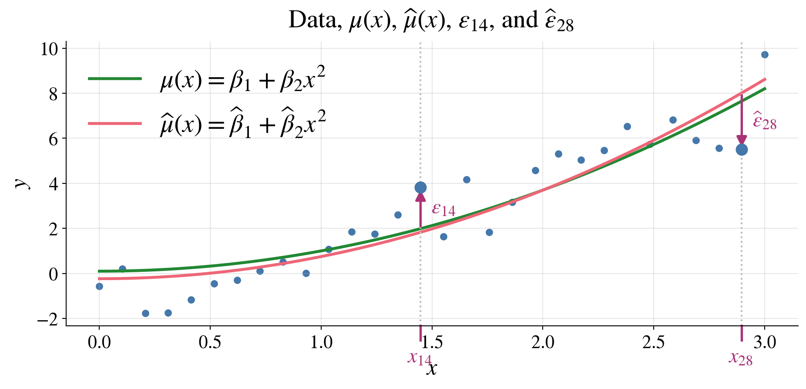
Confidence ellipsoid for \(\vbeta\) assuming \(\vveps \sim \Norm(\vzero,\sigma^2 \mI)\)
From the normal distribution of \(\hvbeta\), it follows that \[\frac{ (\hvbeta-\vbeta)^\top (\mX^\top\mX) (\hvbeta-\vbeta) }{\sigma^2} \sim \chi^2_d \]
Also, \(\hvbeta = \vbeta + (\mX^\top \mX)^{-1}\mX^\top \vveps = \vbeta + (\mX^\top \mX)^{-1}\mX^\top \mP \vveps\) since \(\mP \mX = \mX\), so \(\hvbeta\) depends only on \(\mP\vveps\)
Moreover, \(S^2 = \lVert(\mI - \mP)\vveps\rVert^2/(n-d)\), so \(S^2\) depends only on \((\mI-\mP)\vveps\)
Since \(\hvbeta\) and \(S^2\) depend on orthogonal projections of \(\vveps\) onto \(\cc(\mX)\) and \(\cc(\mX)^\perp\), respectively, and \(\vveps\) is Normal, \(\hvbeta\) and \(S^2\) are independent.
Hence, replacing \(\sigma^2\) with \(S^2\) gives \[ \frac{ (\hvbeta-\vbeta)^\top(\mX^\top\mX)(\hvbeta-\vbeta) }{dS^2} \sim F_{d,n-d} \]
Therefore
\[ (\hvbeta-\vbeta)^\top (\mX^\top\mX) (\hvbeta-\vbeta) \le d S^2 F_{d,n-d,\alpha}, \quad \text{where } \Prob(F_{d,n-d} > F_{d,n-d,\alpha}) = \alpha \]
defines a \(\class{alert}{(1-\alpha)\text{ confidence ellipsoid for }\vbeta}\) centered at \(\hvbeta\)
Individual confidence intervals for the \(\beta_j\) assuming \(\vveps \sim \Norm(\vzero,\sigma^2 \mI)\)
\(\exstar\)Show that the variance of \(\hbeta_j\) is \(\sigma^2\bigl[(\mX^\top\mX)^{-1}\bigr]_{jj}\), where \(\bigl[(\mX^\top\mX)^{-1}\bigr]_{jj}\) denotes the \(j\)th diagonal entry of \((\mX^\top\mX)^{-1}\)
Since $ !( ,; 2()^{-1} ) $, it follows that for each \(j=1,\dots,d\),
\[ \hbeta_j \sim \Norm\!\left( \beta_j,\; \sigma^2\bigl[(\mX^\top\mX)^{-1}\bigr]_{jj} \right) \]
where \(\bigl[(\mX^\top\mX)^{-1}\bigr]_{jj}\) denotes the \(j\)th diagonal entry of \((\mX^\top\mX)^{-1}\). Replacing \(\sigma^2\) by \(S^2\) gives
\[\begin{gather*} \frac{ \hbeta_j-\beta_j }{ S\sqrt{\bigl[(\mX^\top\mX)^{-1}\bigr]_{jj}} } \sim t_{n-d} \\ \hbeta_j \pm t_{n-d,\alpha/2} \; S\sqrt{\bigl[(\mX^\top\mX)^{-1}\bigr]_{jj}} \; \text{ is an }\class{alert}{(1-\alpha)\text{ confidence interval for }\beta_j} \text{ for each } j=1,\dots,d \end{gather*}\]
Joint vs individual confidence statements
\[\begin{gather*} (\hvbeta-\vbeta)^\top (\mX^\top\mX) (\hvbeta-\vbeta) \le dS^2F_{d,n-d,\alpha} \quad \text{is a joint confidence region \class{alert}{for the whole vector $\vbeta$}} \\ \hbeta_j \pm t_{n-d,\alpha/2} \; S\sqrt{\bigl[(\mX^\top\mX)^{-1}\bigr]_{jj}}, \; j=1,\dots,d, \quad \text{are \class{alert}{individual confidence intervals for each $\beta_j$}} \end{gather*}\]
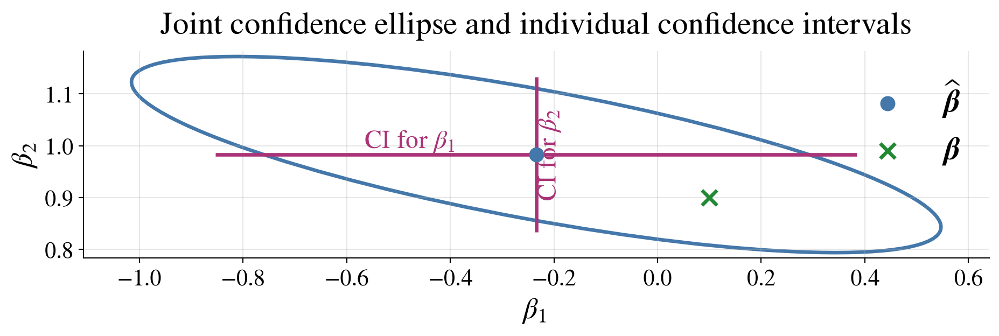
Joint confidence for \(\vbeta\) is not the same as simultaneous confidence for all \(\beta_j\)
The confidence ellipsoid for \(\vbeta\) and the individual confidence interval for \(\beta_1\) both include \(\beta_1 = 0\) so one might question whether there should be a constant term in the model
Caution about many intervals
If we form separate \((1-\alpha)\) confidence intervals for each \(\beta_j\), the probability that all of them are simultaneously correct is generally less than \((1-\alpha)\)
So:
- individual confidence intervals control each \(\beta_j\) separately
- the confidence ellipsoid controls \(\vbeta\) jointly
Confidence interval for \(\mu(\vx)\) assuming \(\vveps \sim \Norm(\vzero,\sigma^2 \mI)\)
Recall \(\mu(\vx)=\vx^\top\vbeta\), \(\hmu(\vx)= \mu(\vx) + \vx^\top (\mX^\top\mX)^{-1}\mX^\top\vveps \sim \Norm\!\left(\mu(\vx),\sigma^2 \vx^\top (\mX^\top \mX)^{-1} \vx\right)\)
Replacing \(\sigma^2\) by \(S^2\) gives
\[ \frac{ \hmu(\vx)-\mu(\vx) }{ S \sqrt{\vx^\top(\mX^\top\mX)^{-1}\vx} } \sim t_{n-d} \]
Therefore
\[ \hmu(\vx) \pm t_{n-d,\alpha/2} \; S \sqrt{\vx^\top(\mX^\top\mX)^{-1}\vx} \]
is a \((1-\alpha)\) confidence interval for \(\mu(\vx)\)
Prediction interval for \(Y\mid \vx\)
A new observation, \(Y \mid \vx = Y_{\text{new}}=\vx^\top\vbeta+\varepsilon_{\text{new}}\), depends both on
- the value of \(\vx\) and
- the new error \(\varepsilon_{\text{new}}\sim\Norm(0,\sigma^2)\) that is independent of the data used to fit the model
Predicting \(Y_{\text{new}}\) by \(\hmu(\vx)\) has uncertainty coming both from the uncertainty in the model parameters and the new error term:
\[\begin{align*} Y_{\text{new}}-\hmu(\vx) & = \bigl(\vx^\top\vbeta+\varepsilon_{\text{new}}\bigr) - \bigl(\vx^\top\vbeta + \vx^\top (\mX^\top\mX)^{-1}\mX^\top\vveps \bigr) \\ & = \varepsilon_{\text{new}} - \vx^\top (\mX^\top\mX)^{-1}\mX^\top\vveps\\ & \sim \Norm\!\left(0,\; \sigma^2\left( 1+\vx^\top(\mX^\top\mX)^{-1}\vx \right)\right) \qquad \text{since $\varepsilon_{\text{new}}$ is independent of $\vveps$} \end{align*}\]
Replacing \(\sigma^2\) by \(S^2\) gives a \(t\)-distribution for the standardized prediction error. A \((1-\alpha)\) prediction interval for \(Y_{\text{new}}\) is then given by
\[ Y_{\text{new}} \in \hmu(\vx) \pm t_{n-d,\alpha/2} S \sqrt{ 1+\vx^\top(\mX^\top\mX)^{-1}\vx } \]
Mean vs prediction intervals
Confidence interval for mean response, \(\mu(\vx)\):
\[ \hmu(\vx) \pm t_{n-d,\alpha/2} S \sqrt{\vx^\top(\mX^\top\mX)^{-1}\vx} \]
Prediction interval for a new observation, \(Y \mid \vx\):
\[ \hmu(\vx) \pm t_{n-d,\alpha/2} S \sqrt{ 1+\vx^\top(\mX^\top\mX)^{-1}\vx } \]
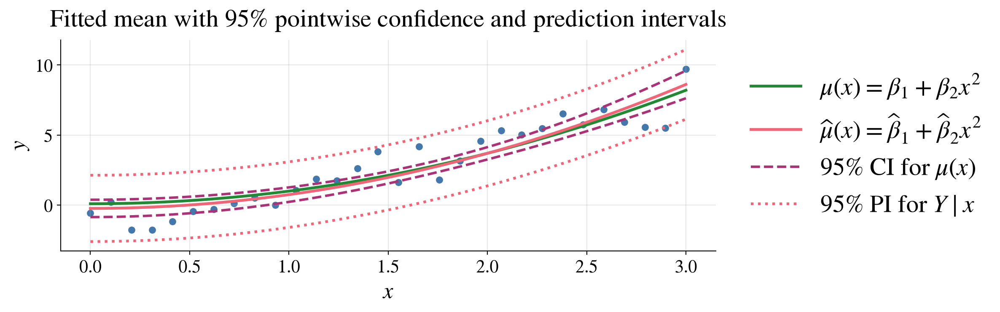
Prediction intervals are wider than confidence intervals
These pointwise intervals exhibit uncertainty at each fixed \(\vx\), not simultaneously for all \(\vx\) at once
Simultaneous confidence and prediction bands
Pointwise intervals control uncertainty at one fixed \(\vx\); “\(\forall \vx\)” is outside the probability statement
A band controls uncertainty simultaneously for all \(\vx\); “\(\forall \vx\)” is inside the probability statement
\[\begin{multline*} \bigl|\hmu(\vx)-\mu(\vx)\bigr| = \bigl|\vx^\top(\hvbeta-\vbeta)\bigr| = \bigl|[(\mX^\top\mX)^{-1/2}\vx]^\top [(\mX^\top\mX)^{1/2} (\hvbeta-\vbeta)]\bigr| \\ \le \sqrt{\vx^\top(\mX^\top\mX)^{-1}\vx} \sqrt{(\hvbeta-\vbeta)^\top(\mX^\top\mX)(\hvbeta-\vbeta)} \quad \text{for all }\vx \qquad \text{by Cauchy--Schwarz} \end{multline*}\]
So the confidence ellipse,\((\hvbeta-\vbeta)^\top(\mX^\top\mX)(\hvbeta-\vbeta) \le dS^2F_{d,n-d,\alpha}\) with probability \(1-\alpha\), implies the following \((1-\alpha)\) confidence band:
\[ \mu(\vx) \in \hmu(\vx) \pm \sqrt{dF_{d,n-d,\alpha}}\; S\sqrt{\vx^\top(\mX^\top\mX)^{-1}\vx} \qquad \text{for all }\vx \]
Similarly, a \((1-\alpha)\) prediction band is
\[ Y_{\text{new}} \in \hmu(\vx) \pm \sqrt{dF_{d,n-d,\alpha}}\; S\sqrt{1+\vx^\top(\mX^\top\mX)^{-1}\vx} \qquad \text{for all }\vx \]
Pointwise intervals use the \(t\) multiplier because they control one fixed \(\vx\)
Simultaneous bands use the larger \(\sqrt{dF_{d,n-d,\alpha}}\) multiplier because they must work for all \(\vx\) at once
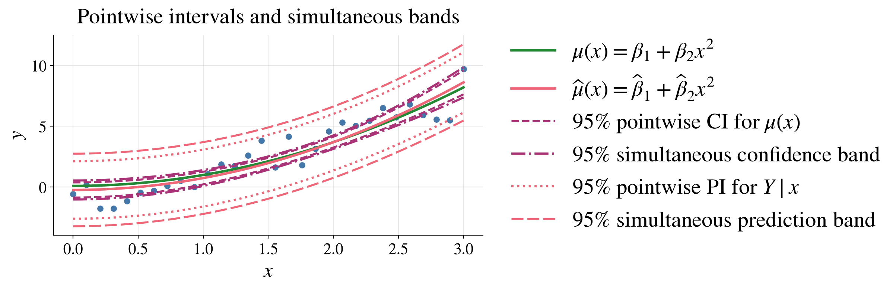
Simultaneous bands are wider than pointwise intervals because they must cover \(\vx\) values at once, not just one fixed \(\vx\)
Computing regression quantities via QR decomposition
Let \(\mX \in \mathbb{R}^{n \times d}\) have full column rank, and write its QR decomposition as
- \(\mQ \in \mathbb{R}^{n \times d}\) has orthonormal columns (\(\mQ^\top \mQ = \mI_d\))
- \(\mR \in \mathbb{R}^{d \times d}\) is upper triangular
Then it follows that
Least squares estimate: \(\hvbeta = \mR^{-1} (\mQ^\top \vY)\)
Projection matrix: \(\mP = \mQ \mQ^\top\)
Fitted values \(\hvY = \mQ (\mQ^\top \vY)\)
Residuals: \(\hvveps = \vY - \hvY\)
Covariance of \(\hvbeta\): \(\cov(\hvbeta) = \sigma^2 \mR^{-1} \mR^{-\top}\)
- Variance of \(\hbeta_j\): \(\sigma^2 \bigl[(\mR^{-1} \mR^{-\top})\bigr]_{jj}\), where \(\bigl[(\mR^{-1} \mR^{-\top})\bigr]_{jj}\) denotes the \(j\)th diagonal entry of \(\mR^{-1} \mR^{-\top}\)
Variance of \(\hmu(\vx)\): \(\var(\hmu(\vx)) = \sigma^2 \lVert (\mR^{-\top} \vx)\rVert^2\)
Regression diagnostics
(CB §11.3; WMS §11.14)
Up to this point, we have assumed that the chosen linear model is appropriate.
In practice, we should also check whether
- the model assumptions are reasonable
- the chosen set of predictors is adequate
- our assumptions about the errors are justified
The main questions are:
- Is the mean response approximately linear in the chosen predictors, which themselves may be nonlinear transformations of underlying variables?
- Does the variability of the errors stay roughly constant with respect to \(\vx\) and \(\mu(\vx):=\Ex(Y \mid \vx)\)?
- Are the errors approximately normally distributed?
- Are there unusual or influential observations that strongly affect the fit?
Residuals versus fitted values
Fitted values \(\hvY = \mX \hvbeta = \mP \vY\) are the predicted mean responses
Residuals \(\hvveps = \vY - \hvY = (\mI - \mP)\vY\) are the differences between observed and fitted values
Under the normal linear model, the fitted values and residuals are independent; more generally, they are uncorrelated. A good first diagnostic is a plot of residuals versus fitted values.
If the linear model is appropriate, then the residual plot should show
- points scattered around \(0\)
- no strong curve or pattern
- roughly constant vertical spread across the range of fitted values
A residual plot should look like random noise around zero, not like a pattern.
Standardized residuals
Because the variability of \(\hveps_i\) depends on the leverage of observation \(i\), it is useful to scale residuals.
A standardized residual is
\[ r_i = \frac{\hveps_i}{S\sqrt{1-h_{ii}}}, \]
where \(h_{ii}\) is the \(i\)th diagonal entry of the projection (hat) matrix \(\mP\) (using \(h_{ii}\) rather than \(p_{ii}\) since \(p_i\) is common for probabilities)
Large values of \(|r_i|\) indicate observations whose responses are unusual relative to the fitted model.
As a rough rule of thumb:
- \(|r_i| > 2\): worth attention
- \(|r_i| > 3\): potentially serious
Normal Q–Q plot
Let \(r_1,\dots,r_n\) be standardized residuals, and let \(r_{(1)} \le \cdots \le r_{(n)}\) denote the sorted values.
Define plotting positions and corresponding normal quantiles: \[ p_i = \frac{i - 1/2}{n}, \qquad i=1,\dots,n \qquad z_i = \Phi^{-1}(p_i), \qquad i=1,\dots,n \]
Plot the points \((z_i, r_{(i)})\), \(i=1,\dots,n\)
- If the residuals are Normal, the points lie approximately on \(y = x\)
- Systematic deviations, such as curvature, indicate non-normality
- This matters most for small samples
- For large samples, moderate nonnormality is often less serious for estimation, though it may still affect inference
Why not a P–P plot?
P–P plot would plot \[ \bigl(p_i, \Phi(r_{(i)})\bigr) \]
- This checks whether the \(\Phi(r_i)\) are approximately \(\Unif[0,1]\)
- However, it compresses the tails and is less sensitive to deviations there
👉 Q–Q plots are preferred because they better reveal tail departures from Normality
Projection (hat) matrix and leverage
The fitted values satisfy
\[ \hvY = \mP \vY, \qquad \mP := \mX(\mX^\top \mX)^{-1}\mX^\top \]
The matrix \(\mP\) is sometimes called the hat matrix because it puts a “hat” on \(\vY\)
Its diagonal entries \(h_{ii} = (\mP)_{ii} = \|\vQ_{i,\cdot}\|^2\), where \(\mX = \mQ \mR\) is the QR decomposition of \(\mX\), are called the leverages
- A large value of \(h_{ii}\) means that observation \(i\) has an unusual predictor vector \(\vx_i\)
- Such observations can have a large effect on the fitted regression
- High leverage by itself is not necessarily bad, but it does mean that the observation deserves attention
Our example
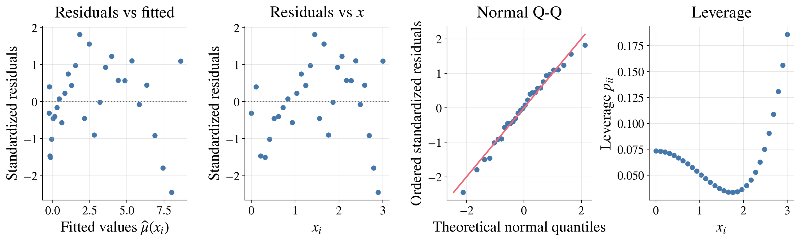
Here the diagnostics look pretty good:
The residuals show no strong pattern and roughly constant spread across fitted values and \(x\)
The normal Q-Q plot shows only mild departures from normality
The leverage plot shows that no observations have unusually high leverage
When things go wrong
Heteroscedasticity
Suppose the mean model is still correct,
\[ Y_i = \beta_1 + \beta_2 x_i^2 + \varepsilon_i, \]
but the error variance is no longer constant:
\[ \varepsilon_i \sim \Norm(0,\sigma_i^2), \qquad \sigma_i = 0.25 + 0.35 x_i \]
So:
- \(\Ex(Y_i \mid x_i) = \beta_1 + \beta_2 x_i^2\) is still correct
- but \(\var(Y_i \mid x_i)\) increases with \(x_i\)
This violates the constant-variance assumption
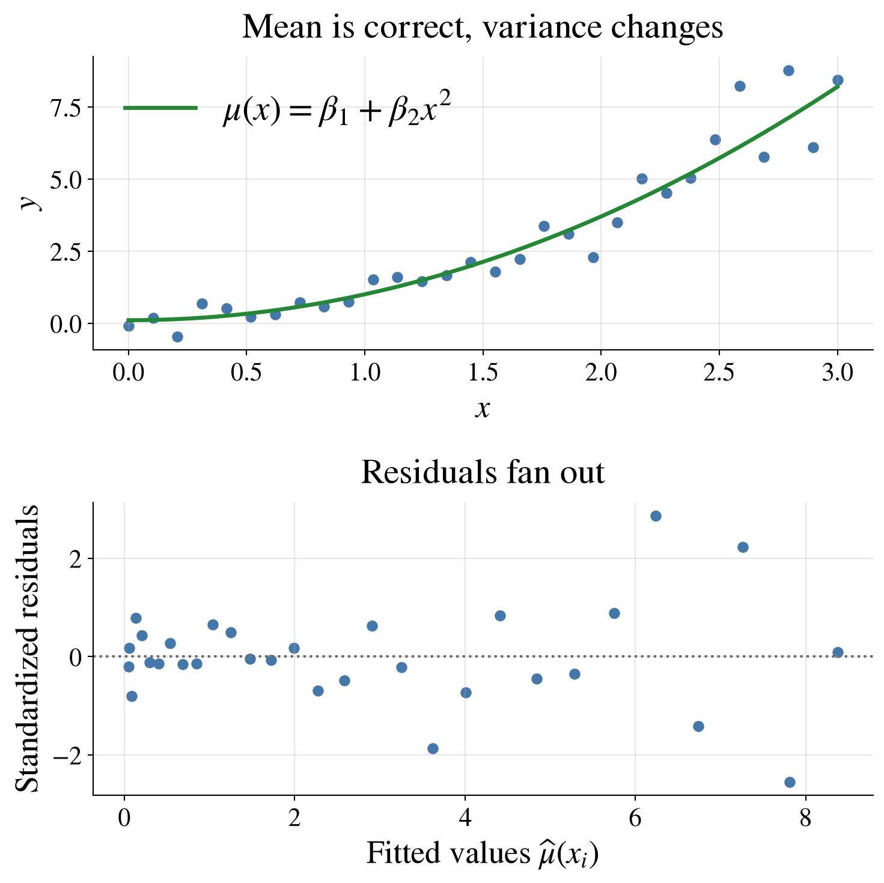
A funnel shape in the residual plot suggests that the variance is changing with the mean or with \(x\)
Possible responses include transforming the response, modeling the variance, or using weighted least squares
What might help?
- transform the response (for example, \(\log Y\) when appropriate)
- use weighted least squares if the variance changes systematically
- reconsider the mean model, since a bad mean model can also create patterns
- for inference, use heteroscedasticity-robust standard errors
A high-leverage point
Suppose the mean model is still
\[ Y_i = \beta_1 + \beta_2 x_i^2 + \varepsilon_i, \qquad \varepsilon_i \sim \Norm(0,\sigma^2), \]
but now one observation has a predictor value far from the rest
For example, most of the data may have \(0 \le x_i \le 3\), but one point might have \(x_i = 4.5\)
Then:
- the point may not have a large residual
- but it can still have high leverage
- and it can strongly affect the fitted regression
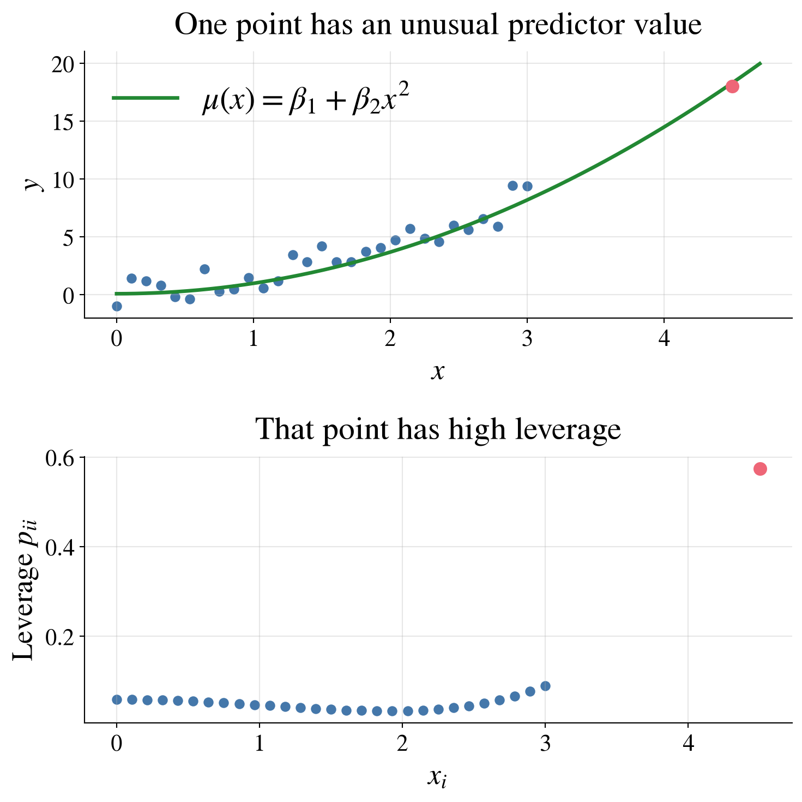
A point can have a large effect on the fitted model because its predictor value is unusual, even if its residual is not especially large.
What might help?
- check whether the unusual predictor value is a data-entry error
- determine whether the point belongs to the same population as the others
- compare fits with and without the point
- collect more data in that region of predictor space if possible
Summary of common diagnostic plots
Common diagnostic plots include:
Standardized residuals versus fitted values checks linearity and constant variance
Standardized residuals versus a predictor can reveal patterns that are easier to see when there is one main predictor
Normal Q-Q plot checks approximate normality of residuals
Leverage plot checks which observations have unusual predictor values
What to do if diagnostics raise concerns?
If diagnostics reveal problems, one might
- transform the response or some predictors
- add additional predictors or interaction terms
- use weighted least squares if variance is not constant
- check for data-entry errors or unusual observations
- reconsider whether a different model is more appropriate
Diagnostics do not automatically tell us the right fix, but they do tell us where the model may be going wrong
Model selection
(CB §11.4; WMS §11.15)
- Adding more predictors almost always improves the fit to the observed data
- Reduces residual sum of squares (RSS)
- However, a more complicated model is not better if the improvement is insignificant
- We must ask whether the improvement is real signal or just noise
Model selection aims to balance:
- goodness of fit
- model simplicity
- interpretability
- predictive performance
Comparing nested models
Suppose we compare two nested models (first \(d_0\) variables of both are the same):
- Reduced model with \(d_0\) parameters and residual sum of squares \(\RSS_0\)
- Full model with \(d_1 > d_0\) parameters and residual sum of squares \(\RSS_1\)
Since the full model has more predictors, we always have
\[ \RSS_1 \le \RSS_0 \]
Is the reduction in RSS large enough to justify the extra parameters?
Geometry behind the test
\[ \underbrace{\vY}_{\text{data}} = \underbrace{\hvY_0}_{\text{fit of reduced model}} + \underbrace{(\hvY_1 - \hvY_0)}_{\text{extra explained by new predictors}} + \underbrace{(\vY - \hvY_1)}_{\text{residual of full model}} \]
- \(\hvY_1 = \mP_1\vY =\) fit of full model
- \(\vY - \hvY_0 =\) residual of reduced model
- \(\hvY_1 - \hvY_0 \in \cc(\mX_1)\) since \(\mathcal{C}(\mX_0) \subset \mathcal{C}(\mX_1)\)
- \(\vY - \hvY_1 \in \cc(\mX_1)^\perp\)
Since \((\hvY_1 - \hvY_0) \perp (\vY - \hvY_1)\), we have
\[ \underbrace{\lVert \vY - \hvY_0 \rVert^2}_{\RSS_0} = \underbrace{\lVert \hvY_1 - \hvY_0\rVert ^2}_{\SS_{\text{extra}}} + \underbrace{\lVert \vY - \hvY_1\rVert^2}_{\RSS_1} \]
The improvement in fit is itself a sum of squares from an orthogonal component
Normal model \(\implies\) independence
If \(\vY \sim \Norm(\mX_1 \vbeta, \sigma^2 \mI)\), then orthogonal components are independent
Under \(H_0: \text{reduced model is correct}\),
\[ \frac{\SS_{\text{extra}}}{\sigma^2} \sim \chi^2_{d_1-d_0}, \quad \frac{\RSS_1}{\sigma^2} \sim \chi^2_{n-d_1} \qquad \text{independently} \]
The \(F\) statistic
\[ F = \frac{(\SS_{\text{extra}})/(d_1-d_0)}{\RSS_1/(n-d_1)} = \frac{(\RSS_0-\RSS_1)/(d_1-d_0)}{\RSS_1/(n-d_1)} \sim F_{d_1-d_0,\;n-d_1} \]
ANOVA table for regression \(F\)-test
| Source | df | Sum of squares | Mean square | \(F\) |
|---|---|---|---|---|
| Extra (Full vs Reduced) | \(d_1 - d_0\) | \(\SS_{\text{extra}} = \RSS_0 - \RSS_1\) | \(\displaystyle \text{MS}_{\text{extra}}= \frac{\SS_{\text{extra}}}{d_1 - d_0}\) | \(\dfrac{\text{MS}_{\text{extra}}}{\text{MSE}}\) |
| Error (Full) | \(n - d_1\) | \(\RSS_1\) | \(\displaystyle\text{MSE}= \frac{\RSS_1}{n - d_1}\) | |
| Total (Reduced) | \(n - d_0\) | \(\RSS_0\) |
\(F\) statistic compares extra signal to noise level
Interpretation
- Numerator: improvement from added predictors
- Denominator: variability not explained by the full model
👉 Large \(F\) ⇒ added variables matter
👉 Small \(F\) ⇒ reduced model is adequate
Using \(t\)-tests in model selection
A natural way to simplify a model is to examine individual coefficients:
- If a confidence interval for \(\beta_j\) includes 0, the predictor may be unnecessary
- If the interval is clearly away from 0, the predictor appears important
This provides a useful first pass for identifying weak predictors
However, caution is needed:
- Predictors may be correlated, so their effects can be shared
- A variable may be insignificant alone but important together with others
- Decisions based only on individual tests can be unstable
Suggested strategy
- \(t\)-tests identify candidates for removal, but do not imply automatic removal
- Compare models using an \(F\)-test (or another criterion)
Model selection should be based on the model as a whole, not just individual coefficients
Coefficient of determination \(R^2\)
To measure goodness of fit, we decompose the variability in the response:
\[\begin{gather*} \underbrace{\sum_{i=1}^n (Y_i - \barY)^2}_{\SST = \text{total sum of squares}} = \underbrace{\sum_{i=1}^n (\hY_i - \barY)^2}_{\SSR = \text{regression sum of squares}} + \underbrace{\sum_{i=1}^n (Y_i - \hY_i)^2}_{\RSS = \text{residual sum of squares}} \\ R^2 = \frac{\SSR}{\SST} = 1 - \frac{\RSS}{\SST} \in [0,1] \end{gather*}\]
Interpreted as the proportion of variability in \(Y\) explained by the model
Larger \(R^2\) indicates better fit, but it has a major drawback:
- Never decreases when more predictors are added
Adjusted \(R^2\)
Adjusted \(R^2\) corrects for this by penalizing model complexity:
\[ R^2_{\text{adj}} = 1-\frac{\RSS/(n-d)}{\SST/(n-1)} \]
- Larger values are better
Classical regression \(F\) test
The usual regression \(F\) test is the special case where the reduced model is the mean-only model:
\[ Y_i = \beta_0 + \varepsilon_i \]
Then
\[ \RSS_0 = \SST, \qquad \RSS_1 = \RSS, \qquad \SS_{\text{extra}} = \SST - \RSS = \SSR \]
So the general nested-model statistic becomes
\[ F = \frac{\SSR/(d-1)}{\RSS/(n-d)} = \frac{\text{MSR}}{\text{MSE}} \sim F_{d-1,n-d} \qquad \text{under } H_0 \]
where \(H_0\) says that the full model is no better than the mean-only model.
Classical regression \(F\) test asks whether the explanatory variables, taken together, explain significant variation beyond the sample mean
Classical regression ANOVA table
| Source | df | Sum of squares | Mean square | \(F\) |
|---|---|---|---|---|
| Regression | \(d-1\) | \(\SSR = \SST-\RSS\) | \(\displaystyle \text{MSR}=\frac{\SSR}{d-1}\) | \(\displaystyle \frac{\text{MSR}}{\text{MSE}}\) |
| Error | \(n-d\) | \(\RSS\) | \(\displaystyle \text{MSE}=\frac{\RSS}{n-d}\) | |
| Total | \(n-1\) | \(\SST\) |
In this special case, \(\SS_{\text{extra}} = \SSR\) and \(\RSS_1 = \RSS\), so the regression ANOVA table is just the nested-model \(F\) test with the mean-only model as the reduced model
Other metrics and methods for model selection
- Akaike information criterion (AIC) rewards good fit but penalizes complexity
- Bayesian information criterion (BIC) penalizes complexity more strongly than AIC
- Cross-validation (CV) separates the data into a training set and a testing set to estimate predictive performance on new data
- Forward selection, backward elimination, and stepwise regression are automated procedures for adding or removing predictors based on criteria like AIC or BIC
Practical principles for model selection
When comparing regression models:
- Prefer simpler models if they explain the data nearly as well
- Use subject-matter knowledge, not just automatic procedures
- Check diagnostics again after selecting a model
- Remember that the “best” model for explanation may differ from the “best” model for prediction
A good regression model should fit well, make scientific sense, and generalize to new data.
Our example revisited
\[ y = 0.10 + 0.90 x^2 + \varepsilon, \qquad \varepsilon \sim \Norm(\vzero, 1.00\,\mI) \]
The \(p\)-value is not small, so there is no compelling evidence that the intercept is needed
Coefficient Estimates (Full Model)
| Estimate | Std. Error | t value | p value | CI Lower | CI Upper | |
|---|---|---|---|---|---|---|
| Intercept | -0.2341 | 0.3021 | -0.7749 | 0.4449 | -0.8529 | 0.3847 |
| x^2 | 0.9830 | 0.0732 | 13.4323 | 0.0000 | 0.8331 | 1.1329 |
The confidence interval for the intercept includes 0, suggesting it may not be necessary, while the interval for the \(x^2\) term is clearly away from 0, indicating it is important
Model Comparison
| Model | Parameters (d) | RSS |
|---|---|---|
| Reduced (no intercept) | 1 | 35.512100 |
| Full | 2 | 34.766600 |
The RSS for the full model is not much smaller than the RSS for the reduced model, suggesting that the intercept may not be needed
F-test for Removing Intercept
| Quantity | Value |
|---|---|
| F statistic | 0.600400 |
| Numerator df (d_full − d_reduced) | 1.000000 |
| Denominator df (n − d_full) | 28.000000 |
| p-value | 0.444900 |
Goodness of Fit
| Metric | Value |
|---|---|
| R^2 (full model) | 0.865700 |
| Adjusted R^2 (full model) | 0.860900 |
| Uncentered R^2 (reduced model, no intercept) | 0.927300 |
For models without an intercept, we use the uncentered \(R^2\):
\[ R^2_{\text{unc}} = 1 - \frac{\sum_{i=1}^n (Y_i - \hat{Y}_i)^2}{\sum_{i=1}^n Y_i^2} \]
- Measures fit relative to 0 (not \(\barY\))
- Not directly comparable to the usual \(R^2\)
Diagnostic plots for the reduced model
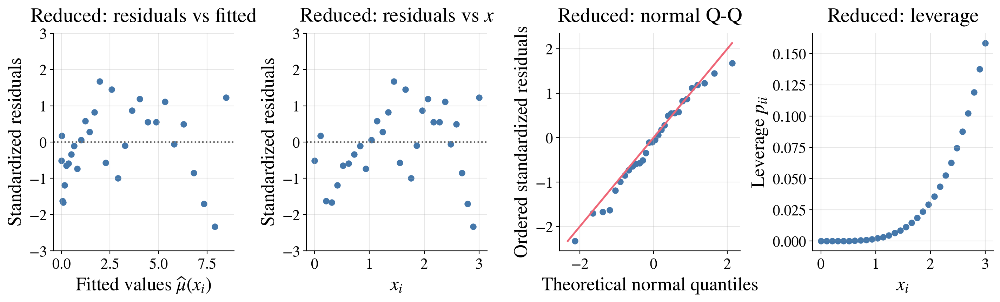
Confidence/prediction intervals/bands for the reduced model
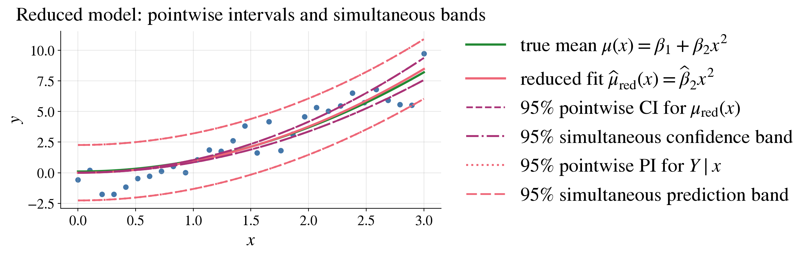
Because the reduced model has only one regression parameter, the “simultaneous” and “pointwise” intervals are the same in this case
The reduced model fits the data well, even though it is not of the same form as the true model
Reduced model caveat
Removing the intercept forces \(\mu(0)=0\)
Near \(x=0\), the confidence band misses the true mean (it shrinks like \(x^2\))
- Widening the band does not help
This is model misspecification, not a band issue
Confidence bands reflect uncertainty given the model, not model correctness
Observed data provide no clear evidence that an intercept is needed
- But should check domain knowledge and subject-matter considerations
F-tests: A unifying framework
From Normal to \(\chi^2\) to \(F\)
If \(Z_1,\dots,Z_\nu \overset{\text{iid}}{\sim} \mathcal{N}(0,1)\), then \[ \sum_{i=1}^{\nu} Z_i^2 \sim \chi^2_\nu, \text{ a chi-square distribution with $\nu$ degrees of freedom} \] Note that \(\Ex(\chi^2_\nu) = \nu\) and \(\var(\chi^2_\nu) = 2\nu\)
If \(U \sim \chi^2_\nu\) and \(V \sim \chi^2_\lambda\) are independent, then \[ \frac{U/\nu}{V/\lambda} \sim F_{\nu,\lambda}, \text{ an $F$-distribution with $\nu$ and $\lambda$ degrees of freedom} \] Note that \(\Ex(F_{\nu,\lambda}) = \frac{\lambda}{\lambda - 2}\) for \(\lambda > 2\) and \(\var(F_{\nu,\lambda}) = \frac{2\lambda^2(\nu + \lambda - 2)}{\nu(\lambda - 2)^2(\lambda - 4)}\) for \(\lambda > 4\)
Comparing variances
For two independent samples: \[ \frac{S_1^2/\sigma_1^2}{S_2^2/\sigma_2^2} \sim F_{n_1-1,\;n_2-1} \]
To test \(H_0:\ \sigma_1^2 = \sigma_2^2\), use \[ F = \frac{S_1^2}{S_2^2} \]
Put the larger sample variance in the numerator
- ensures \(F \ge 1\)
- simplifies one-sided rejection
Regression and ANOVA
In nested linear models where \(H_0\) assumes the reduced model is correct: \[\begin{align*} F & = \frac{\text{extra explained variation (gain in fit) per added parameter}} {\text{residual variation (noise) per degree of freedom}} \\ &= \frac{(\text{RSS}_0 - \text{RSS}_1)/(d_1 - d_0)} {\text{RSS}_1/(n - d_1)} \sim F_{d_1 - d_0,\, n - d_1} \end{align*}\]
Large \(F \implies\) reduced model is inadequate, (compelling evidence to reject \(H_0\))
Both numerator and denominator estimate \(\sigma^2\)
Under \(H_0\), the extra parameters explain only noise, so the ratio is near 1
A large ratio indicates signal beyond noise
Inverting degrees of freedom
If \(F \sim F_{\nu,\lambda}\), then \[ \frac{1}{F} \sim F_{\lambda,\nu} \]
Therefore, critical values satisfy \[ F_{\nu,\lambda,\alpha} = \frac{1}{F_{\lambda,\nu,\,1-\alpha}} \]
Useful when tables only give one ordering
Big picture
\(F\)-tests compare two independent estimates of variance
Unify
- variance comparison
- ANOVA
- regression model selection
- variance comparison
Interpretation depends on context:
- variance comparison: are two noise levels equal?
- model selection: \(\displaystyle\frac{\text{extra variation}}{\text{noise}}\)
From regression to one-way analysis of variance (ANOVA) and back
(CB §11.2; WMS Ch. 13)
So far, we modeled relationships with quantitative predictors
Now we consider a categorical predictor (apples and oranges, not numbers)
Do different groups have different means?
Set-up
\(Y_{ij}\), \(i=1,\ldots,k,\; j=1,\ldots,n_i\) comes from group \(i\) and IID observation \(j\) in that group
Total sample size is \(n = \sum_{i=1}^k n_i\)
Compare the group means, \(\mu_i = \Ex(Y_{ij})\), \(i=1,\ldots,k\)
Model for one-way ANOVA
Model
\[ Y_{ij} = \mu_i + \varepsilon_{ij}, \qquad \Ex(Y_{ij}) = \mu_i, \quad \varepsilon_{ij} \sim \Norm(0,\sigma^2), \quad \text{independent} \]
Hypotheses
\[ H_0: \mu_1 = \mu_2 = \cdots = \mu_k, \qquad H_a: \text{not all } \mu_i \text{ are equal} \]
Sample means
\[ \text{Group: } \barY_i = \frac{1}{n_i} \sum_{j=1}^{n_i} Y_{ij}, \, i=1, \ldots, k, \qquad \text{Overall: } \barY = \frac{1}{n} \sum_{i=1}^k \sum_{j=1}^{n_i} Y_{ij} \]
Variability
\[\begin{align*} \SST &= \SSB + \SSW \qquad \text{$\exstar$ verify this}\\ \text{Sum of Squares Total ($\SST$)} & = \sum_{i=1}^k \sum_{j=1}^{n_i} (Y_{ij} - \barY)^2 \\ & \qquad \qquad \text{measures how spread out all observations are} \\ \text{Sum of Squares Between ($\SSB$)} & = \sum_{i=1}^k n_i (\barY_i - \barY)^2 \\ & \qquad \qquad \text{measures how spread out the group means are} \\ \text{Sum of Squares Within ($\SSW$)} & = \sum_{i=1}^k \sum_{j=1}^{n_i} (Y_{ij} - \barY_i)^2 \\ & \qquad \qquad \text{measures how spread out the observations are within each group} \end{align*}\]
Compare signal (between) vs noise (within)
Mean square and \(F\)-statistic
\[\begin{gather*} \MSB= \frac{\SSB}{\underbrace{k-1}_{\text{degrees of freedom between}}} \qquad \text{and}\qquad \MSW = \frac{\SSW}{\underbrace{n-k}_{\text{degrees of freedom within}}} \text{ (estimator of $\sigma^2$)} \\ F = \frac{\text{MSB}}{\text{MSW}} \sim F_{k-1,\,n-k} \qquad \text{under }H_0: \mu_1 = \mu_2 = \cdots = \mu_k \end{gather*}\]
Interpretation of the F-test
\(F > F_{k-1, n-k, \alpha}\) gives strong evidence to reject \(H_0\) and conclude that the means differ
Small \(F\) implies that there is insufficient evidence of differences between the means of groups
ANOVA detects differences, not which groups differ
ANOVA table
\[ \begin{array}{lccc} \text{Source} & \text{Sum of Squares} & \text{df} & \text{Mean Square} \\[6 pt] \hline \text{Between groups} & \SSB & k-1 & \MSB \\ \text{Within groups} & \SSW & n-k & \MSW \\[10 pt] \hline \text{Total} & \SST & n-1 & \end{array} \]
Big picture
One-way ANOVA compares multiple means
Uses variance decomposition to compare variability between groups to variability within groups
Leads to a single global test
Example: one-way ANOVA data
Here are three groups of data:
| 1 | 2 | 3 |
|---|---|---|
| 8.2 | 8.0 | 10.1 |
| 7.9 | 8.3 | 9.8 |
| 8.4 | 7.8 | 10.4 |
| 8.1 | 8.1 | 10.0 |
| nan | 8.2 | nan |
| n | mean | variance | |
|---|---|---|---|
| group | |||
| 1 | 4 | 8.150 | 0.0433 |
| 2 | 5 | 8.080 | 0.0370 |
| 3 | 4 | 10.075 | 0.0625 |
| Source | Sum of Squares | df | Mean Square (MS) | |
|---|---|---|---|---|
| 0 | Between groups (B) | 10.6914 | 2 | 5.3457 |
| 1 | Within groups (W) | 0.4655 | 10 | 0.0465 |
| 2 | Total | 11.1569 | 12 |
\[\begin{gather*} H_0:\mu_1=\mu_2=\mu_3 \text{ vs} \\ H_a:\text{not all } \mu_i \text{ are equal} \end{gather*}\]
| Quantity | Value |
|---|---|
| F = MSB/MSW | 114.838100 |
| df Between | 2.000000 |
| df Within | 10.000000 |
| p-value | 0.000000 |
ANOVA as a regression model
We can rewrite the ANOVA model using indicator functions.
\[ Y_{ij} = \mu_i + \varepsilon_{ij} = \sum_{\ell=1}^k \mu_\ell \, \indic(i = \ell) + \varepsilon_{ij} \]
\(\indic(i=\ell)=1\) if observation \((i,j)\) is in group \(\ell\), and \(0\) otherwise
For each observation, exactly one indicator is \(1\), so \[ \sum_{\ell=1}^k \indic(i=\ell) = 1 \]
ANOVA is a regression model with categorical predictors
In vector/matrix form
\[\begin{equation*} \vY = \mX \vmu + \vveps \qquad \text{where } \mX = \begin{pmatrix} 0 & 1 & 0 & \cdots & 0 & 0 \\ 0 & 0 & 0 & \cdots & 1 & 0 \\ \vdots & \vdots & \vdots & \ddots & \vdots & \vdots \\ 1 & 0 & 0 & \cdots & 0 & 0 \end{pmatrix} \end{equation*}\]
- Each row of \(\mX\) has exactly one \(1\) and the rest \(0\)
No intercept needed
\[ \sum_{\ell=1}^k \indic(i=\ell) = 1, \]
so including an intercept would make the columns of \(\mX\) linearly dependent
We include all group indicators and omit the intercept to keep the \(\mX\) having full column rank
Connection to least squares
The \(\mu_\ell\) are the regression coefficients and correspond to the group means \(\Ex(Y_{ij} \mid i=\ell)\)
\(\mX^\top \mX = \begin{pmatrix} n_1 & 0 & \cdots & 0 \\ 0 & n_2 & \cdots & 0 \\ \vdots & \vdots & \ddots & \vdots \\ 0 & 0 & \cdots & n_k \end{pmatrix}\) so \(\hvmu = (\mX^\top \mX)^{-1} \mX^\top \vY = \begin{pmatrix} \hmu_1 \\ \hmu_2 \\ \vdots \\ \hmu_k \end{pmatrix}\) with \(\hmu_\ell = \displaystyle \frac{1}{n_\ell} \sum_{j=1}^{n_\ell} Y_{\ell j} =: \barY_\ell\)
\(\displaystyle \underbrace{\sum_{i=1}^k \sum_{j=1}^{n_i} (Y_{ij} - \barY)^2}_{\SST} = \underbrace{\sum_{i=1}^k n_i (\barY_i - \barY)^2}_{\SSB} + \underbrace{\sum_{i=1}^k \sum_{j=1}^{n_i} (Y_{ij} - \barY_i)^2}_{\SSW}\)
The one-way ANOVA test statistic, \(\displaystyle F = \frac{\MSB}{\MSW} = \frac{\SSB/(k-1)}{\SSW/(n-k)}\),
is exactly the regression F-test comparing
- the full model (different group means) to the
- reduced model (all means equal)
ANOVA is just linear regression with indicator variables
- Same least squares framework
- Same projection geometry
- Same F-test machinery
What regression adds
The global ANOVA test examines \(H_0:\mu_1=\mu_2=\cdots=\mu_k\) vs \(H_a:\) not all means are equal, but it does not tell us which means differ
Regression can test whether some means are equal, not just whether all means are equal
Examples of hypotheses we can test
Are groups 1 and 2 the same? \(H_0:\mu_1=\mu_2\)
Can we pool groups 1 and 2, and also pool groups 3 and 4? \(H_0:\mu_1=\mu_2,\ \mu_3=\mu_4\)
These can all be written in the form \(H_0:\mA \vmu = \vb\)
Testing a linear hypothesis
Consider the model with data \(\vY = \mX \vmu + \vveps\), \(\vveps \sim \Norm(\vzero, \sigma^2 \mI)\)
and the hypothesis \(H_0:\mA \vmu = \vb\) of \(r\) constraints, where \(\mA\) is an \(r \times k\) matrix
F-statistic
The test statistic under \(H_0\) is
\[ F = \frac{(\RSS_{\mA\vmu = \vb} - \RSS_{\text{full}})/r}{\RSS_{\text{full}}/(n-k)} = \frac{ (\mA \hvmu - \vb)^\top \bigl[\mA(\mX^\top \mX)^{-1}\mA^\top\bigr]^{-1} (\mA \hvmu - \vb)/r }{ S^2 } \sim F_{r,n-k} \quad \text{under } H_0. \]
\(\mA \hvmu - \vb\) is an \(r \times 1\) vector that measures how far we are from satisfying the constraints
\(\mA(\mX^\top \mX)^{-1}\mA^\top\) is an \(r \times r\) covariance matrix for \(\mA \hvmu\) up to a factor of \(\sigma^2\)
\(S^2 = \RSS/(n-k)\) estimates \(\sigma^2\)
We compare signal (violation of constraints) to noise
Example: Testing Whether Two Means Are Equal
We test whether groups 1 and 2 have the same mean
\[ H_0:\mu_1=\mu_2 \qquad \Longleftrightarrow \qquad H_0: \begin{pmatrix} 1 & -1 & 0 \end{pmatrix} \vmu = 0 \]
Full model: \(Y_{ij} = \mu_i + \varepsilon_{ij}\)
Reduced model under \(H_0:\mu_1=\mu_2\): \(\displaystyle Y_{ij} = \begin{cases} \mu_{12} + \varepsilon_{ij}, & i=1,2 \\ \mu_3 + \varepsilon_{ij}, & i=3 \end{cases}\)
\(\displaystyle F = \frac{(\RSS_{\mu_1=\mu_2} - \RSS_{\text{full}})/r}{\RSS_{\text{full}}/(n-k)}\)
| Quantity | Value | |
|---|---|---|
| 0 | F | 0.2339 |
| 1 | df (constraint) | 1.0000 |
| 2 | df (within) | 10.0000 |
| 3 | p-value | 0.6390 |
The reduced model forces groups 1 and 2 to have the same mean
If this constraint greatly increases the residual sum of squares, then \(H_0\) is not plausible
Reject \(H_0\) if enforcing \(\mu_1=\mu_2\) causes a large increase in error
Big Picture
ANOVA is a special case of regression, and regression allows targeted comparisons between groups
- ANOVA tests whether all means are equal
- Regression lets us test specific relationships such as \(\mu_1=\mu_2\)
- The same F-test machinery applies
- This flexibility becomes even more valuable in more complicated models
From linear to nonlinear mean
- So far our models are linear
- Ordinary least squares
- Model: \(Y \sim \Norm(\mu(\vx), \sigma^2)\), \(\mu(\vx) = \vx^\top \vbeta\)
- Model with data: \(\vY \sim \Norm(\mX\vbeta, \sigma^2 \mI)\)
- One-way ANOVA: categorical predictors, still linear mean
- Model: \(Y \sim \Norm(\mu_i, \sigma^2)\) for group \(i = 1, \ldots, k\)
- Model with data: \(Y_{ij} \sim \Norm(\mu_i, \sigma^2)\) independent, where \(i = 1, \ldots, k\) and \(j = 1, \ldots, n_i\)
- Ordinary least squares
- What if
- \(Y \in \{0,1\}\) (success/failure) Bernoulli random variable with explanatory variables \(\vx\)?
- \(\Ex(Y \mid \vx) = p(\vx)\) with \(p(\vx) \in [0,1]\)
- But \(p(\vx) = \vx^\top \vbeta\) can fall outside \([0,1]\)
- Need a nonlinear function of \(\vx\) to model \(p(\vx)\)
- \(Y \in \{0,1\}\) (success/failure) Bernoulli random variable with explanatory variables \(\vx\)?
Binary response setup
Explanatory variables, \(\vx \in \reals^d\) like OLS
Response data: \(Y_i \in \{0,1\}\)
Define \(p_i = \Prob(Y_i = 1 \mid \vx_i)\), so \(Y_i \sim \Bern(p_i)\)
Need to model \(p_i\) with a nonlinear transformation that maps \(\mathbb{R} \to (0,1)\)
Logistic function
\[ p_i = \frac{1}{1 + e^{-\vx_i^\top \vbeta}} \qquad \text{or equivalently} \qquad \log (\text{odds}) = \logit(p_i) = \log\left(\frac{p_i}{1-p_i}\right) = \vx_i^\top \vbeta \]
- \(\beta_j = \text{change in log-odds per unit increase in } x_j\)
- \(e^{\beta_j} = \text{multiplicative change in odds per unit increase in } x_j\)
- \(\logit\) is the quantile function of the logistic distribution
- which has CDF \(\displaystyle F(t) = \frac{1}{1 + e^{-t}}\), \(- \infty < t < \infty\)
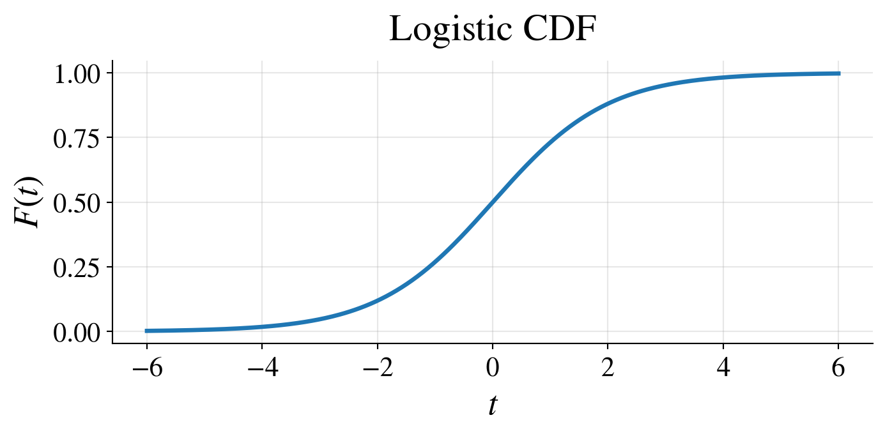
Likelihood
Bernoulli likelihood: \[ L\bigl(\vbeta \mid \{(\vx_i, y_i)\}_{i=1}^n\bigr) = \prod_{i=1}^n p_i^{y_i}(1-p_i)^{1-y_i} = \prod_{i=1}^n \left(\frac{1}{1 + e^{-\vx_i^\top \vbeta}}\right)^{y_i} \left(\frac{1}{1 + e^{\vx_i^\top \vbeta}}\right)^{1-y_i} \]
Log-likelihood: \[\begin{align*} \ell\bigl(\vbeta \mid \{(\vx_i, y_i)\}_{i=1}^n\bigr) & = \sum_{i=1}^n \left[ y_i \log(p_i) + (1-y_i)\log(1-p_i) \right] \\ & = \sum_{i=1}^n \left[ y_i \log\left(\frac{1}{1 + e^{-\vx_i^\top \vbeta}}\right) + (1-y_i)\log\left(\frac{1}{1 + e^{\vx_i^\top \vbeta}}\right) \right] \end{align*}\]
Estimate \(\vbeta\) by MLE \(\hvbeta = \argmax_\vb \ell\bigl(\vb \mid \{(\vx_i, y_i)\}_{i=1}^n\bigr)\)
- No closed form solution
- Use numerical optimization (e.g., Newton–Raphson / IRLS)
Estimation by iteratively reweighted least squares (IRLS)
MLE: \(\hvbeta = \arg\max_{\vb} \ell(\vb)\)
Solve: \(\nabla \ell(\vb)=0\) (no closed form)
Iteratively reweighted least squares (IRLS):
Initialize \(\vbeta^{(0)} = \vzero\)
For \(t = 0,1,2,\ldots\) until convergence:
\(\vp^{(t)} = \bigl(p_1^{(t)},\dots,p_n^{(t)}\bigr)^\top\), \(p_i^{(t)} = \dfrac{1}{1 + e^{-\vx_i^\top \vbeta^{(t)}}}\) predicted probabilities of success for data
\(\mW^{(t)} = \diag\!\Bigl(\bigl(p_i^{(t)}(1-p_i^{(t)})\bigr)_{i=1}^n\Bigr)\), a diagonal matrix of regression weights
\(\vz^{(t)} = \mX\vbeta^{(t)} + \bigl(\mW^{(t)}\bigr)^{-1}(\vy-\vp^{(t)})\), where \(\vy-\vp^{(t)}\) is the vector of residuals
Update: $^{(t+1)}
{} {i=1}^n w_i{(t)}(z_i{(t)} - _i^)^2 = ^{(t)}
- (^^{(t)} )^{-1} ^(-^{(t)}) $
\(\displaystyle \hvbeta= \lim_{t\to\infty} \vbeta^{(t)}\) and \(\hp_i = \dfrac{1}{1+e^{-\vx_i^\top \hvbeta}}\)
Inference
MLE: \(\hvbeta = \arg\max_{\vb} \ell(\vb)\)
Approximate distribution: \(\hvbeta \appxsim \Norm\!\bigl(\vbeta,\; (\mX^\top \mW \mX)^{-1}\bigr)\)
Weights: \(\mW = \diag\bigl(p_i(1-p_i)\bigr)\)
Standard errors: \(\SE(\hbeta_j) = \sqrt{\bigl[(\mX^\top \mW \mX)^{-1}\bigr]_{jj}}\)
Wald statistic: \(\displaystyle \frac{\hat\beta_j}{\text{SE}(\hat\beta_j)} \approx \Norm(0,1)\)
Likelihood ratio statistic for nested models: \(2\bigl(\ell(\text{full})-\ell(\text{reduced})\bigr) \approx \chi^2_\nu\)
Same philosophy as OLS: test whether predictors matter
Decision boundary (prediction)
For a new \(\vx\): \(\hp(\vx) = \dfrac{1}{1 + e^{-\vx^\top \hvbeta}}\)
Classification: \(\hY(\vx) = 1\) if \(\hp(\vx) > 0.5\), else \(0\)
Boundary: \(\hp(\vx)=0.5 \iff \vx^\top \hvbeta = 0\)
Uncertainty in \(\hp(\vx)\) comes from \(\hvbeta\): \[ \text{SE}\bigl(\hp(\vx)\bigr) \approx \hp(\vx)\bigl(1-\hp(\vx)\bigr) \sqrt{\vx^\top(\mX^\top \mW \mX)^{-1}\vx} \]
Confidence interval for probability: \(\hp(\vx) \pm z_{\alpha/2}\,\text{SE}\bigl(\hp(\vx)\bigr)\)
Classification confidence:
- uncertain if \(\hp(\vx) \approx 0.5\)
- more confident as \(\hp(\vx)\) moves away from \(0.5\)
Probit link
Logit: \(\logit(p) = \displaystyle \log\left(\frac{p}{1-p}\right)\) is the quantile function of the logistic distribution
Probit: \(\probit(p) = \Phi^{-1}(p)\) is the quantile function of the standard normal distribution
- Model is \(\probit(p(\vx)) = \vx^\top \vbeta\)
- \(p(\vx) = \Phi(\vx^\top \vbeta)\), where \(\Phi\) is the CDF of \(\Norm(0,1)\)
- Both:
- map \((0,1) \to \reals\)
- give similar fits
- probit interpretation:
- latent normal threshold model
- lighter tails than logit
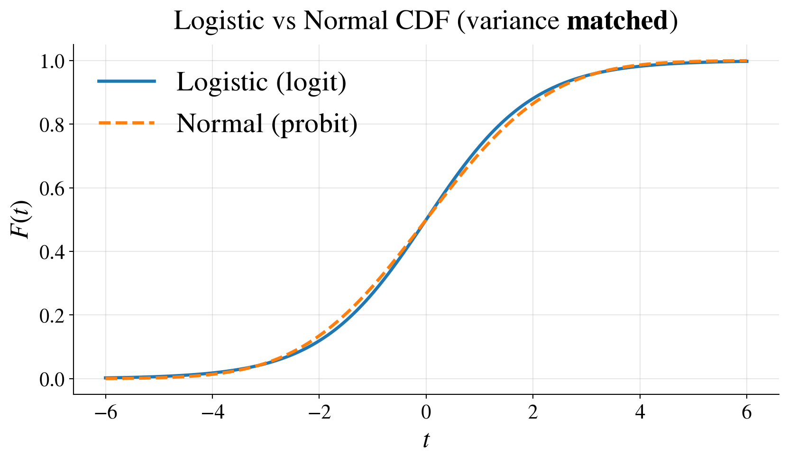
Example: Graduate admissions explained by GRE
Suppose that we observe whether an applicant is admitted to a graduate program
\[ Y = \begin{cases} 1, & \text{if admitted} \\ 0, & \text{if not admitted} \end{cases} \qquad \text{and} \qquad X = \text{GRE score} \]
Does the probability of admission depend on the applicant’s GRE score?
\[ p(x) = \Prob(Y=1 \mid X=x) \]
A logistic regression model assumes that
\[ \log\left(\frac{p(x)}{1-p(x)}\right) = \beta_0 + \beta_1 x \qquad \text{or equivalently} \qquad p(x) = \frac{1}{1 + e^{-(\beta_0+\beta_1 x)}} \]
Thus, the probability of admission is an S-shaped function of the GRE score
Simulated data with realistic GRE scores
| GRE | admit | |
|---|---|---|
| 26 | 285 | 0 |
| 19 | 291 | 0 |
| 15 | 300 | 1 |
| 66 | 301 | 0 |
| 77 | 305 | 0 |
| 34 | 308 | 0 |
| 38 | 309 | 1 |
| 110 | 311 | 1 |
| 71 | 311 | 1 |
| 102 | 314 | 0 |
| 56 | 318 | 0 |
| 90 | 319 | 0 |
Plot of the binary data and a GRE-only logistic curve
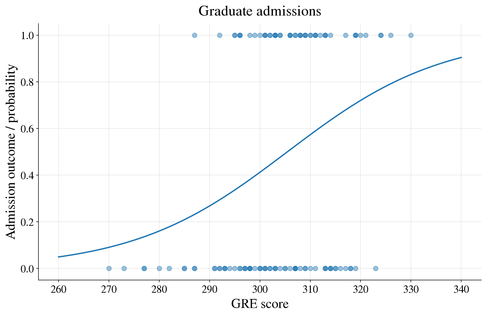
Fit a logistic regression model using GRE only
| Coefficient | Std. Error | |
|---|---|---|
| Intercept | -19.7468 | 6.0702 |
| GRE | 0.0640 | 0.0199 |
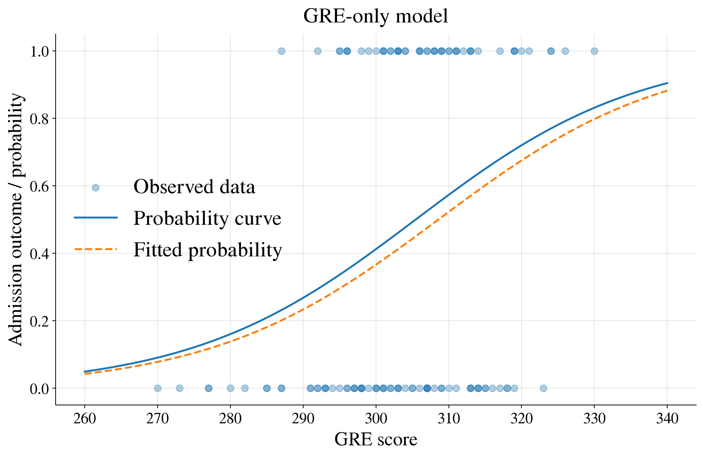
Example: Graduate admissions explained by both GRE and GPA
- Admissions are not based on GRE alone
- More realistic model allows the admission probability to depend on both GRE and GPA
(this is how the data were simulated to begin with)
\[ \log\left(\frac{p(x_1,x_2)}{1-p(x_1,x_2)}\right) = \beta_0 + \beta_1 x_1 + \beta_2 x_2 \]
where
\(x_1\) is GRE
\(x_2\) is GPA
Now the probability of admission depends on two predictors, so
Cannot visualize this model with a single probability curve against one predictor
Can still explore model fit through fitted probabilities and grouped summaries
Simulated data with GRE and GPA
| GRE | GPA | admit | |
|---|---|---|---|
| 26 | 285 | 3.40 | 0 |
| 19 | 291 | 3.15 | 0 |
| 15 | 300 | 3.26 | 1 |
| 66 | 301 | 3.30 | 0 |
| 77 | 305 | 3.04 | 0 |
| 34 | 308 | 3.32 | 0 |
| 38 | 309 | 2.76 | 1 |
| 110 | 311 | 3.27 | 1 |
| 71 | 311 | 3.71 | 1 |
| 102 | 314 | 2.89 | 0 |
| 56 | 318 | 3.25 | 0 |
| 90 | 319 | 2.93 | 0 |
Fit a logistic regression model using GRE and GPA
| Coefficient | Std. Error | |
|---|---|---|
| Intercept | -27.8978 | 7.2497 |
| GRE | 0.0682 | 0.0206 |
| GPA | 2.0661 | 0.8425 |
Predicted probabilities for a few applicants
| GRE | GPA | admit | p_admit_hat | |
|---|---|---|---|---|
| 26 | 285 | 3.40 | 0 | 0.192 |
| 19 | 291 | 3.15 | 0 | 0.176 |
| 15 | 300 | 3.26 | 1 | 0.331 |
| 66 | 301 | 3.30 | 0 | 0.365 |
| 77 | 305 | 3.04 | 0 | 0.306 |
| 34 | 308 | 3.32 | 0 | 0.491 |
| 38 | 309 | 2.76 | 1 | 0.245 |
| 110 | 311 | 3.27 | 1 | 0.517 |
| 71 | 311 | 3.71 | 1 | 0.726 |
| 102 | 314 | 2.89 | 0 | 0.374 |
| 56 | 318 | 3.25 | 0 | 0.623 |
| 90 | 319 | 2.93 | 0 | 0.477 |
Compare fitted and observed admission rates by decile of fitted probability
| prob_bin | n | mean_fitted_probability | observed_admission_rate | |
|---|---|---|---|---|
| 0 | (0.0719, 0.18] | 12 | 0.129 | 0.000 |
| 1 | (0.18, 0.269] | 12 | 0.224 | 0.500 |
| 2 | (0.269, 0.321] | 12 | 0.295 | 0.250 |
| 3 | (0.321, 0.374] | 12 | 0.346 | 0.500 |
| 4 | (0.374, 0.415] | 12 | 0.392 | 0.250 |
| 5 | (0.415, 0.486] | 12 | 0.451 | 0.417 |
| 6 | (0.486, 0.539] | 12 | 0.517 | 0.417 |
| 7 | (0.539, 0.593] | 12 | 0.554 | 0.583 |
| 8 | (0.593, 0.717] | 12 | 0.644 | 0.500 |
| 9 | (0.717, 0.892] | 12 | 0.782 | 0.917 |
Bin the data; otherwise you just compare predicted probabilities with zeros and ones
Calibration plot
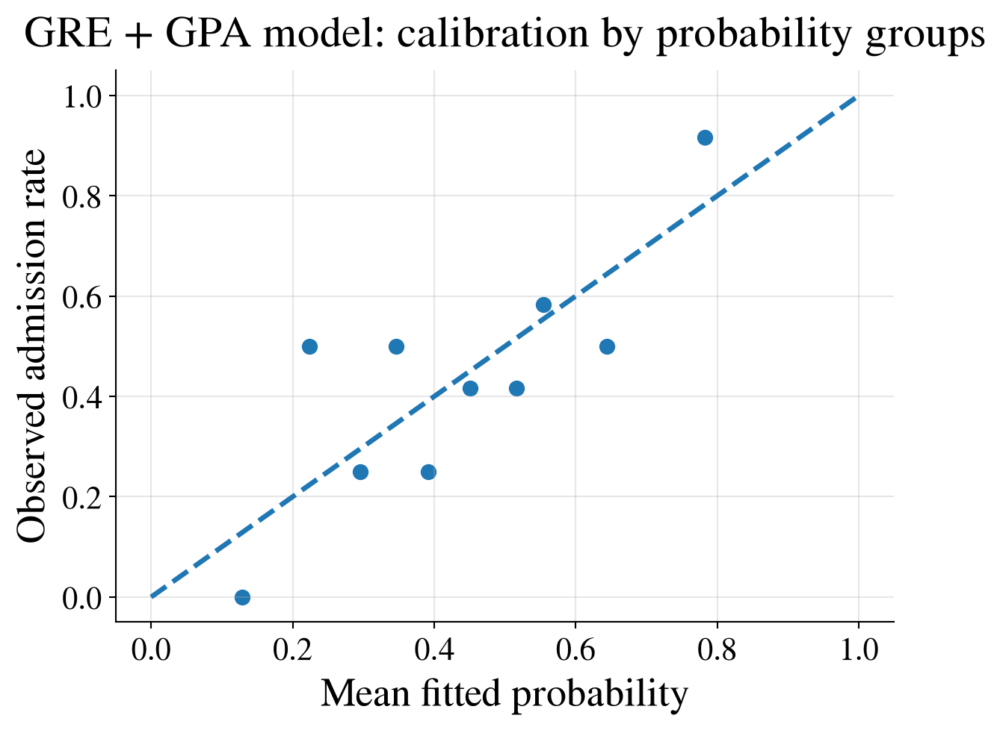
Interpretation
- GRE-only model: probability of admission is a curve as a function of one predictor
- GRE + GPA model: probability depends on two predictors, so no single S-shaped curve to plot against one horizontal axis
- Can still assess fit by examining fitted probabilities and comparing them with observed admission rates in groups
This is why regression is often explored using:
- fitted probabilities
- grouped summaries
- calibration plots
- classification tables
rather than only a single scatterplot with a fitted curve
Model comparison
| Model | Log-Likelihood | AIC |
|---|---|---|
| GRE only | -75.957000 | 155.915000 |
| GRE + GPA | -72.669000 | 151.338000 |
Likelihood ratio test
| Statistic | p-value |
|---|---|
| 6.576000 | 0.010300 |
Interpretation
- The GRE + GPA model has higher log-likelihood and lower AIC
- The likelihood ratio test has a small p-value
👉 Adding GPA significantly improves the model fit.
Big picture
Linear model models mean directly
Logistic regression models transformed mean (log-odds)
Key idea: keep linear structure, change the scale
From logit to a general framework
- Logistic regression:
- \(Y \mid \vx \sim \Bern(p(\vx))\)
- \(\logit\bigl(p(\vx)\bigr) = \vx^\top \vbeta\)
- Key idea: linear model on a transformed mean
Generalized linear models (GLMs)
Form: \(g(\mu(\vx)) = \vx^\top \vbeta\), where \(\mu = \Ex(Y \mid \vx)\)
Three components:
- distribution of \(Y\)
- linear predictor \(\vx^\top \vbeta\)
- link function \(g\)
The linear predictor stays; the distribution and link change
Link Function
\(\mathcal{M}\) = set of possible means \(\mu = \Ex[Y]\)
\(g : \mathcal{M} \to \mathbb{R}\) is the link function
Linear predictor: \[ g\bigl(\mu(\vx)\bigr) = \vx^\top \vbeta \]
Inverse link: \[ \mu(\vx) = g^{-1}(\vx^\top \vbeta) \]
\(g\) maps the mean space \(\mathcal{M}\) to \(\mathbb{R}\) so a linear model applies to \(g(\mu)\) instead of \(\mu\) directly
GLM is not \(g(Y) = \vx^\top \vbeta + \varepsilon\),
which is transformation of the response
Examples
| Model | Distribution of \(Y \mid \vx\) | Link function \(g\) |
|---|---|---|
| OLS | \(\Norm\bigl(\mu(\vx), \sigma^2\bigr)\) | Identity: \(g(\mu) = \mu\) |
| Logistic regression | \(\Bern\bigl(p(\vx)\bigr)\) | Logit: \(g(p) = \log\left(\dfrac{p}{1-p}\right)\) |
| Poisson regression | \(\Pois\bigl(\mu(\vx)\bigr)\) | Log: \(g(\mu) = \log (\mu)\) |
Links
- Match the range:
- probabilities in \((0,1)\)
- counts \(\ge 0\)
- Make model linear:
- \(g(\mu) = \vx^\top \vbeta\)
Variance, estimation, and inference
Variance structure
OLS: \(\var(Y \mid \vx)=\sigma^2\)
Logistic: \(\var(Y\mid \vx)=\mu(\vx)(1-\mu(\vx))\)
Poisson: \(\var(Y \mid \vx)=\mu(\vx)\)
Estimation and inference
Likelihood: \(L(\vbeta) = \prod_{i=1}^n \varrho(y_i \mid \mu(\vx_i))\)
Solve: \(\nabla \ell(\vb)=0\) for \(\hvbeta\) (no closed form)
Computation: IRLS (generalizes least squares)
Inference:
- Wald tests
- likelihood ratio tests
- Wald tests
Transformations of \(Y\) contrasted with GLMs and nonlinear regression
| Transforming \(Y\) | GLM with link function | Nonlinear regression |
|---|---|---|
| \(g(Y) = \vx^\top \vbeta + \varepsilon\) \(Y = g^{-1}(\vx^\top \vbeta + \varepsilon)\) \(\varepsilon \sim \Norm(0,\sigma^2)\) |
\(g\bigl(\mu(\vx)\bigr) = \vx^\top \vbeta\), \(\; \mu(\vx)=\Ex(Y \mid \vx)\) | \(Y = f(\vx; \vbeta) + \varepsilon\) \(\varepsilon \sim \Norm(0,\sigma^2)\) |
| Models \(g(Y)\), not \(Y\) | Models \(g\bigl(\mu(\vx)\bigr)\) via a nonlinear link | Models \(\mu(\vx)\) via nonlinear \(f\) |
| Additive error on transformed scale | Variability specified via distribution of \(Y\) | Additive error on original scale |
| \(\mu(\vx) = \Ex(Y \mid \vx) \ne g^{-1}(\vx^\top \vbeta)\) | \(\mu(\vx) = g^{-1}(\vx^\top \vbeta)\) | \(\mu(\vx) = f(\vx; \vbeta)\) |
| Improves linearity and variance stability | Models mean–variance relationship | Flexible mean specification |
| Mean is distorted by transformation | Mean is modeled directly | Mean depends on chosen \(f(\cdot;\vbeta)\) |
\(\exstar\) What does this mean for \(g(Y) = \log(Y)\) and \(f(\vx; \vbeta) = \exp(\vx^\top \vbeta)\)?
Big picture
- Linear model:
- models mean directly
- GLM:
- models transformed mean
- Choose:
- distribution
- link
- distribution
- Covers:
- continuous responses
- binary responses
- count responses
- continuous responses
Design matrix
The \(n \times d\) design matrix \(\mX\) appears in generalized linear models with data as
\[ g \bigl(\Ex(\vY \mid \vx) \bigr) = \begin{pmatrix} g \bigl( \mu(\vx_1) \bigr) \\ g \bigl( \mu(\vx_2) \bigr) \\ \vdots \\ g \bigl( \mu(\vx_n) \bigr) \end{pmatrix} = \mX \vbeta \]
Each row of \(\mX\) is denoted by \(\vx_i^\top= (x_{i1}, x_{i2}, \dots, x_{id})\) corresponds to one observation
Each column of \(\mX\) is denoted by \(\vX_j\) and corresponds to one predictor:
- Intercept (all 1s)
- Quantitative variables
- Indicator (dummy) variables
👉 \(\mX\) encodes all the structure of the explanatory variables of the model
Why the design matrix matters
Fitted values: \(\hat{\vY} = \mX \hat{\vbeta} \in \mathcal{C}(\mX)\)
Residuals are orthogonal: \(\vY - \hat{\vY} \perp \mathcal{C}(\mX)\)
OLS estimator: \(\hat{\vbeta} = (\mX^\top \mX)^{-1} \mX^\top \vY\) requires \(\mX^\top \mX\) invertible
(columns of \(\mX\) are linearly independent)
Design matrix comes from the experiment
So far, we treated \(\mX\) as given by the data, but in many settings,
we choose \(\mX\) through the design of the experiment
- We control the inputs \(\vx_i\) (rows of \(\mX\))
- We decide
- Which predictor values to use
- How often to repeat them
Examples
- Clinical trials (treatment vs control)
- Engineering experiments (temperature, pressure)
- A/B testing
👉 Better design ⇒ better estimates
Orthogonal and Optimal Designs
Orthogonal design
Columns of \(\mX\) are orthogonal: \(\mX^\top \mX \text{ is diagonal}\)
- Coefficient estimates are uncorrelated
- Interpretation is clean
- Computation is simple
Optimal design (idea)
Choose \(\mX\) to make estimates as precise as possible
- D-optimal: minimize \(\det\big((\mX^\top \mX)^{-1}\big)\)
- A-optimal: minimize \(\trace\big((\mX^\top \mX)^{-1}\big)\)
👉 The design matrix controls estimator variance
👉 Statistics is not just analysis — it is also design
Beyond predictors depending on \(\vx^{\top} \vbeta\)
So far,
Ordinary least squares regression: \(\Ex(Y \mid \vx) = \mu(\vx) = \vx^\top \vbeta\)
Transform the response: \(\Ex \big( g(Y) \mid \vx \big) = \vx^\top \vbeta\) to stabilize variance or improve linearity
Generalized linear models (GLMs) with a link function: \(g\bigl(\mu(\vx)\bigr) = \vx^\top \vbeta\), where \(\mu(\vx) = \Ex(Y \mid \vx)\), to model non-Gaussian responses through a link function and a distributional family
Nonlinear regression with a nonlinear mean function: \(\Ex(Y \mid \vx) = \mu(\vx) = f(\vx; \vbeta)\), where \(f\) is a known nonlinear function of \(\vx\) and \(\vbeta\) is a vector of unknown parameters
Gaussian process regression, also known as kriging, takes a different point of view (lose the \(\vbeta\) and place a probability model on \(f\) directly):
\[ Y(\vx) = f(\vx) + \varepsilon(\vx), \qquad f \sim \GP(m,K), \quad \varepsilon(\vx) \sim \Norm(0,\sigma^2) \]
See scikit-learn and GPy for Python implementations
From unknown parameters to unknown functions
In linear and generalized linear models, the unknown object is \(\vbeta \in \reals^p\)
In Gaussian process regression, the unknown object is a whole function \(f : \cx \to \reals\)
Instead of estimating coefficients, we are learning a surface \(y = f(\vx)\)
from data, \(Y_1, \dots, Y_n\) observed at inputs \(\vx_1, \dots, \vx_n\):
\(Y = f(\vx)\) with
\(f \sim \GP(0,K)\) means that the function values at any finite collection of points have a multivariate normal distribution with mean zero and covariance given by \(K\).
\(f \sim \GP(m,K)\) means that the mean may be nonzero
\(Y = f(\vx) + \varepsilon\) means that the observed data is a noisy version of the underlying function values
\(f \sim \GP(0,K)\)
For any inputs \(\vx_1,\dots,\vx_n\),
\[ \begin{pmatrix} f(\vx_1)\\ \vdots\\ f(\vx_n) \end{pmatrix} \sim \Norm\!\bigl( \vzero,\; \mK \bigr), \qquad \mK = \bigl(K(\vx_i,\vx_j)\bigr)_{i,j=1}^n = \begin{pmatrix} K(\vx_1,\vx_1) & \cdots & K(\vx_1,\vx_n)\\ \vdots & \ddots & \vdots\\ K(\vx_n,\vx_1) & \cdots & K(\vx_n,\vx_n) \end{pmatrix} \]
means
\[ \Ex[f(\vx)] = 0, \qquad \cov \bigl ( f(\vt), f(\vx) \bigr ) = K(\vt,\vx), \qquad \text{for all } \vt, \vx \]
Multivariate normal theory applied to function values
All randomness comes from the function itself
The kernel, \(K\), must be symmetric, positive definite
Since \(\mK\) is a covariance matrix, it must be symmetric and positive definite (positive eigenvalues)
The kernel function, \(K\), must be defined such that \(\mK = \bigl(K(\vx_i,\vx_j)\bigr)_{i,j=1}^n\) is a symmetric, positive definite matrix for all distinct choices of \(\vx_1, \ldots, \vx_n\)
The kernel \(K\) controls the properties of \(f\)
Example: squared exponential kernel
\[ K(\vt,\vx) = \tau^2 \exp\!\left( -\frac{\|\vt-\vx\|^2}{2\ell^2} \right) \]
\(\tau^2\): vertical scale
\(\ell\): length scale
- small \(\ell\) → rapidly varying functions,
- large \(\ell\) → smoother functions

Interpreting the kernel \(K\)
\(K(\vt,\vx)\) controls how function values relate at different inputs \(\vt\) and \(\vx\)
- \(\vt\) and \(\vx\) close \(\implies\) \(f(\vt)\) and \(f(\vx)\) strongly correlated
\(K\) determines
- smoothness
- scale
- periodicity
Prediction in the noiseless, zero mean case
We want to predict \(f(\vx_*)\) from observed data \(\vY = (Y_1, \dots, Y_n)^\top = \bigl(f(\vx_1), \dots, f(\vx_n)\bigr)^\top\)
\[ \begin{pmatrix} \vY\\ f(\vx_*) \end{pmatrix} \sim \Norm\!\left( \vzero, \begin{pmatrix} \mK & \vk_* \\ \vk_*^\top & K(\vx_*,\vx_*) \end{pmatrix} \right) \]
where
\[ \vk_* = \begin{pmatrix} K(\vx_1,\vx_*)\\ \vdots\\ K(\vx_n,\vx_*) \end{pmatrix} \qquad \mK = \begin{pmatrix} K(\vx_1,\vx_1) & \cdots & K(\vx_1,\vx_n)\\ \vdots & \ddots & \vdots\\ K(\vx_n,\vx_1) & \cdots & K(\vx_n,\vx_n) \end{pmatrix} \]
Conditioning gives
\[ \Ex[f(\vx_*) \mid \vY] = \vk_*^\top \mK^{-1} \vY, \qquad \var \bigl(f(\vx_*) \mid \vY\bigl) = K(\vx_*,\vx_*) - \vk_*^\top \mK^{-1} \vk_* \] 👉 Prediction is a weighted combination of observed values.
Deriving the predictor from the conditional distribution
We want to find \(f(\vx_*) \mid \vY \sim \Norm(\mu_*, \sigma_*^2)\). Note that the conditional density is \[\begin{align*} \varrho_{f(\vx_*) \mid \vY}(y_* \mid \vy) &= \frac{\varrho_{\vY, f(\vx*)}(\vy, y_*)}{\varrho_{\vY}(\vy)} \\ \log \bigl(\varrho_{f(\vx_*) \mid \vY}(y_* \mid \vy)\bigr) &= \log \bigl(\varrho_{\vY, f(\vx_*)}(\vy, y_*)\bigr) - C(\text{independent of } y_*) \\ & = -\frac{1}{2} \begin{pmatrix} \vy & y_* \end{pmatrix} \begin{pmatrix} \mK & \vk_* \\ \vk_*^\top & K(\vx_*,\vx_*) \end{pmatrix}^{-1} \begin{pmatrix} \vy \\ y_* \end{pmatrix} + C'(\text{indepndent of } y_*) \end{align*}\]
Let \(s_*^2 = K(\vx_*,\vx_*) - \vk_*^\top \mK^{-1}\vk_*\), and note that \[\begin{pmatrix} \mK & \vk_* \\ \vk_*^\top & K(\vx_*,\vx_*) \end{pmatrix}^{-1} = \begin{pmatrix} \mK^{-1} + \mK^{-1} \vk_* s_*^{-2} \vk_*^\top \mK^{-1} & -\mK^{-1} \vk_* s_*^{-2} \\ -s_*^{-2} \vk_*^\top \mK^{-1} & s_*^{-2} \end{pmatrix} \] \[\begin{align*} \text{So} \qquad \log \bigl(\varrho_{f(\vx_*) \mid \vY}(y_* \mid \vy)\bigr) & = -\frac{1}{2} \left[ y_*^2 s_*^{-2} - 2 y_* s_*^{-2}\vk_*^\top \mK^{-1} \vy \right] + C''(\text{independent of } y_*) \\ & = -\frac{1}{2} \left[ \bigl(y_* - \vk_*^\top \mK^{-1} \vy\bigr)^2 s_*^{-2} \right] + C'''(\text{independent of } y_*) \end{align*}\] Read off the mean and variance from this expression
Interpretation of the predictor
Predictor (no noise yet) in terms of data is a data-adaptive interpolant
\[ \Ex[f(x_*) \mid \vy] = \vk_*^\top \mK^{-1} \vy \]
- weights depend on similarity via \(K\)
- nearby points matter more
- far points matter less
Contrast:
- linear model → global coefficients \(\vbeta\)
- Gaussian process → local weighting determined by \(K\)
\(\exstar\) Show that \(\Ex[f(x_i) \mid \vy] = f(\vx_i)\), i.e,. the predictor interpolates the data
\(\exstar\) What is \(\sigma_*^2\) for \(\vx_* = \vx_i\)? What does this say about the uncertainty at observed data points?
\(\exstar\) Show that the kernel \(K\) and the kernel \(47 K\) give the same predictor, but different variances
Precision matrix viewpoint
Recall the joint distribution
\[ \vY \sim \Norm(\vzero, \mK), \qquad \class{alert}{\text{covariance matrix }} \mK = \bigl(K(\vx_i,\vx_j)\bigr)_{i,j=1}^n \]
Instead of the covariance \(\mK\), consider its inverse
\[ \mQ = \mK^{-1} \quad \class{alert}{\text{(precision matrix)}} \]
Why look at \(\mQ\)?
\(\mQ\) encodes conditional (direct) relationships
\(Q_{ij} = 0\) if and only if \(Y_i\) and \(Y_j\) are conditionally independent given the other variables
\(\var(Y_i \mid \{Y_k : k \ne i\}) = \displaystyle \frac{1}{Q_{ii}}\)
\(\displaystyle \corr(Y_i, Y_j \mid \{Y_k : k \ne i,j\}) = \frac{- Q_{ij}}{\sqrt{Q_{ii}Q_{jj}}}\)
Interpretation for GP models
\(\mK\) → similarity / smoothness via kernel
\(\mQ\) → local dependence structure
Large \(Q_{ij}\):
- strong direct interaction between \(Y_i\) and \(Y_j\)
Sparse \(\mQ\):
- “local” models
- connects to Gaussian Markov random fields (GMRFs)
- “local” models
Computational perspective
Prediction uses \(\Ex\bigl(f(\vx_*) \mid \vY\bigr) = \vk_*^\top \mK^{-1} \vY = \vk_*^\top \mQ \vY\)
Big picture
- Covariance view: global smoothness
- Precision view: local structure + computation
Credible intervals for \(f(\vx_*)\)
From the conditional distribution,
\[\begin{multline*} f(\vx_*) \mid \vY \sim \Norm\!\bigl(\mu_*(\vx_*),\, \sigma_*^2(\vx_*)\bigr), \\ \text{where } \mu_*(\vx_*) = \vk_*^\top \mK^{-1} \vY, \quad \sigma_*^2(\vx_*) = K(\vx_*,\vx_*) - \vk_*^\top \mK^{-1} \vk_* \end{multline*}\]
\((1-\alpha)\) credible interval
\[ f(\vx_*) \in \mu_*(\vx_*) \pm z_{\alpha/2}\,\sigma_*(\vx_*) \qquad \text{with probability } 1-\alpha \]
Interpretation
- uncertainty depends on geometry of inputs
- near observed data → small variance
- far from data → large variance
👉 Gaussian processes give uncertainty quantification automatically
Kernel parameters (hyperparameters)
But wait! We haven’t said how to choose the kernel \(K\) or its parameters:
- scale: \(\tau^2\)
- length scale: \(\ell\)
- (later) smoothness: \(\nu\)
Example (squared exponential):
\[ K(\vt,\vx) = \tau^2 \exp\!\left(-\frac{\|\vt-\vx\|^2}{2\ell^2}\right) \]
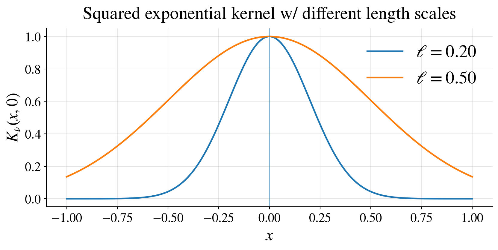
How do we choose these parameters?
Treat them as unknown and infer them from the data
\(\vtheta = (\tau^2, \ell, \dots)\)
\(\vY \sim \Norm(\vzero, \mK_\vtheta)\)
Empirical Bayes (maximum likelihood) approach
Log marginal likelihood
\[ \log \varrho(\vY \mid \vtheta) = -\frac{1}{2} \vY^\top \mK_{\vtheta}^{-1} \vY -\frac{1}{2} \log \bigl(\det(\mK_{\vtheta})\bigr) -\frac{n}{2} \log(2\pi) \]
Empirical Bayes (maximum likelihood)
\[ \hvtheta = \argmax_{\vtheta} \log \varrho(\vY \mid \vtheta) \qquad \text{solved by numerical optimization, e.g., gradient ascent} \]
Objective balances fit and complexity
data fit: \(\vY^\top \mK_{\vtheta}^{-1} \vY\)
complexity penalty: \(\log \bigl(\det(\mK_{\vtheta})\bigr)\)
👉 automatic tradeoff between overfitting and smoothness
Optimizing the vertical scale \(\tau^2\)
Suppose that the kernel has the form \(K_{\vtheta}=\tau^2 \widetilde{\mK}_{\tvtheta}\)
- \(\mK_{\vtheta}^{-1} = \tau^{-2}\widetilde{\mK}_{\tvtheta}^{-1}\)
- \(\det(\mK_{\vtheta,\tau^2})= (\tau^2)^n \det(\widetilde{\mK}_{\vtheta})\)
So the log marginal likelihood becomes \[ \ell(\tau^2,\vtheta) = -\frac{1}{2\tau^2} \vY^\top \widetilde{\mK}_{\vtheta}^{-1}\vY -\frac{n}{2}\log(\tau^2) -\frac{1}{2}\log\bigl(\det(\widetilde{\mK}_{\vtheta})\bigr) -\frac{n}{2}\log(2\pi) \]
Differentiate with respect to \(\tau^2\), set equal to zero, and solve for \(\tau^2\) to get the profiled log likelihood \[ \frac{\partial \ell}{\partial \tau^2} = \frac{1}{2(\tau^2)^2} \vY^\top \widetilde{\mK}_{\vtheta}^{-1}\vY - \frac{n}{2\tau^2}, \qquad \widehat{\tau}^2(\vtheta) = \frac{1}{n} \vY^\top \widetilde{\mK}_{\vtheta}^{-1}\vY \]
Ignoring constants, optimize one less parameter \[ \hvtheta = \argmin_{\vtheta} \left[n\log( \vY^\top \widetilde{\mK}_{\vtheta}^{-1}\vY) + \log \bigl(\det(\widetilde{\mK}_{\vtheta}) \bigr) \right] \]
Beyond squared exponential: Matérn kernels
Many, many kernels to choose
Matérn family, which includes the squared exponential as a special case, has an additional parameter \(\nu\) controlling smoothness:
\[ K(\vt,\vx) = K_\nu(\lVert\vt-\vx\Vert), \qquad K_\nu(r) = \tau^2 \frac{2^{1-\nu}}{\Gamma(\nu)} \left(\frac{\sqrt{2\nu}r}{\ell}\right)^\nu \ck_\nu\!\left(\frac{\sqrt{2\nu}r}{\ell}\right) \]
where \(\ck_\nu\) is a modified Bessel function of the second kind
Special cases and interpretation
\(K_{1/2}(r) = \tau^2 \exp\!\left(-r/\ell\right) \quad\) (exponential, rough paths)
\(K_{3/2}(r) = \tau^2 \left(1 + \sqrt{3} r/\ell \right) \exp\!\left(-\sqrt{3} r/\ell\right)\) (once differentiable, smoother)
\(\nu \to \infty\) → squared exponential (very smooth)
larger \(\nu\) → smoother functions
👉 kernel choice encodes assumptions about the function
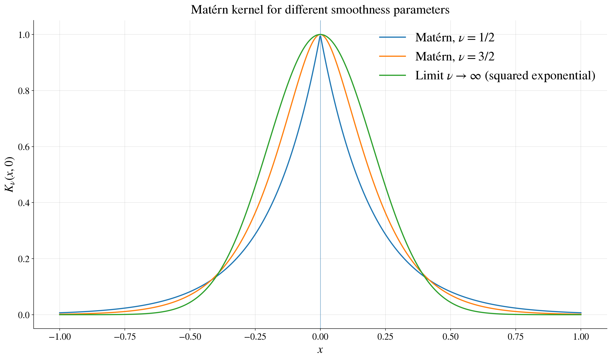
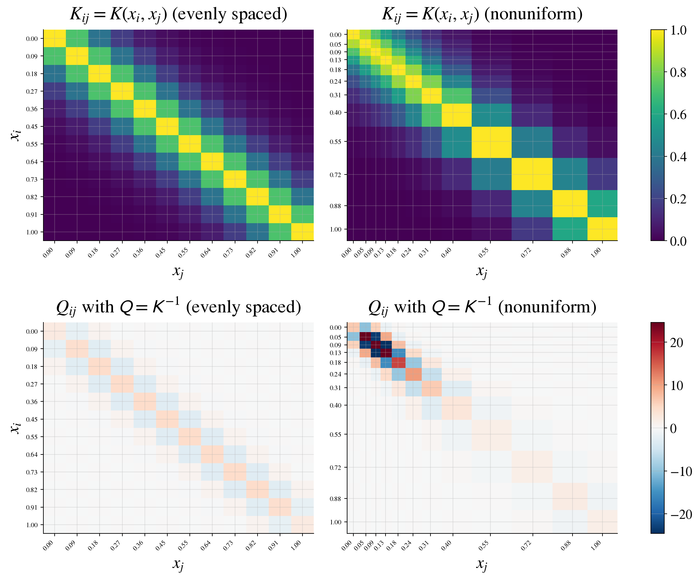
Example
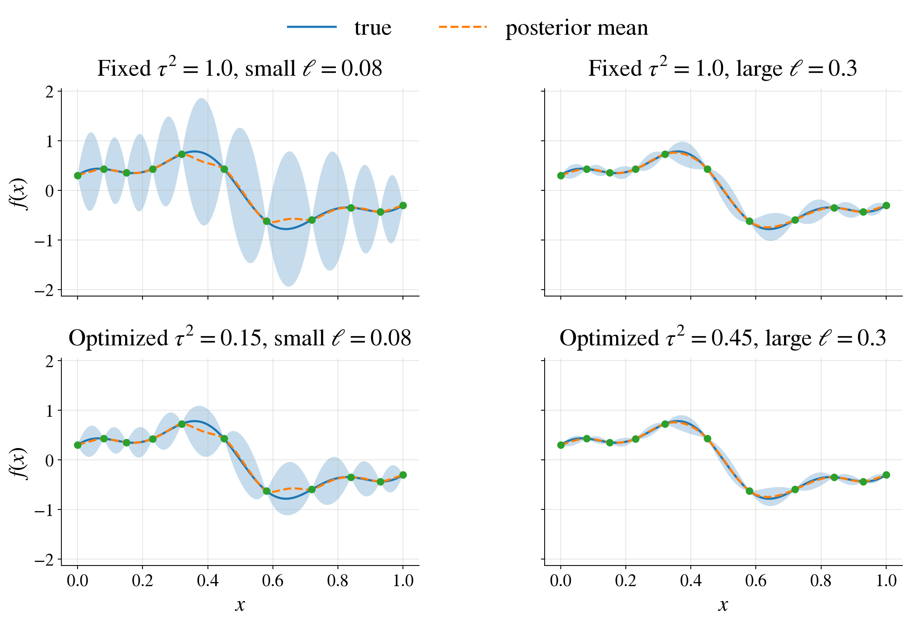
Key takeaway before adding noise
- GP gives:
- predictions
- uncertainty
- parameter estimation
- all from multivariate normal theory
👉 Next: incorporate observation noise
Adding noise back in
Now return to
\[ Y(\vx) = f(\vx) + \varepsilon(\vx), \qquad \varepsilon(\vx) \sim \Norm(0,\sigma^2), \qquad \varepsilon(\vx) \text{ independent of } f \]
Then
\[ \vY = \begin{pmatrix} Y(\vx_1)\\ \vdots\\ Y(\vx_n) \end{pmatrix} \sim \Norm(\vzero,\mK + \sigma^2 \mI) \]
and
\[ \cov\bigl(\vY, f(\vx_*)\bigr) = \vk_*, \qquad \var\bigl(f(\vx_*)\bigr)=K(\vx_*,\vx_*) \]
So the joint distribution is
\[ \begin{pmatrix} \vY\\ f(\vx_*) \end{pmatrix} \sim \Norm\!\left( \vzero, \begin{pmatrix} \mK+\sigma^2\mI & \vk_* \\ \vk_*^\top & K(\vx_*,\vx_*) \end{pmatrix} \right) \]
Conditioning gives
\[ \Ex\bigl[f(\vx_*) \mid \vy\bigr] = \vk_*^\top (\mK+\sigma^2\mI)^{-1}\vy \]
and
\[ \var\bigl(f(\vx_*) \mid \vy\bigr) = K(\vx_*,\vx_*) - \vk_*^\top (\mK+\sigma^2\mI)^{-1}\vk_* \]
The noise inflates the covariance of the observed data from \(\mK\) to \(\mK+\sigma^2\mI\).
Credible interval versus prediction interval
So far, we have the conditional distribution of the latent function value:
\[ f(\vx_*) \mid \vy \sim \Norm\!\bigl(\mu_*(\vx_*),\, s_f^2(\vx_*)\bigr) \]
where
\[ \mu_*(\vx_*) = \vk_*^\top (\mK+\sigma^2\mI)^{-1}\vy, \qquad s_f^2(\vx_*) = K(\vx_*,\vx_*) - \vk_*^\top (\mK+\sigma^2\mI)^{-1}\vk_* \]
Credible interval for the latent function
\[ f(\vx_*) \in \mu_*(\vx_*) \pm z_{\alpha/2}\, s_f(\vx_*) \qquad \text{with probability } 1-\alpha \]
This quantifies uncertainty about the underlying signal \(f(\vx_*)\).
A future noisy response is
\[ Y(\vx_*) = f(\vx_*) + \varepsilon(\vx_*), \qquad \varepsilon(\vx_*) \sim \Norm(0,\sigma^2) \]
so
\[ Y(\vx_*) \mid \vy \sim \Norm\!\bigl(\mu_*(\vx_*),\, s_f^2(\vx_*) + \sigma^2\bigr) \]
Prediction interval for a future observation
\[ Y(\vx_*) \in \mu_*(\vx_*) \pm z_{\alpha/2}\sqrt{s_f^2(\vx_*)+\sigma^2} \qquad \text{with probability } 1-\alpha \]
- credible interval: uncertainty about \(f(\vx_*)\)
- prediction interval: uncertainty about a new noisy observation
👉 prediction intervals are wider because they include observation noise
Interpretation
- \(\Ex\bigl[f(\vx_*) \mid \vy\bigr]
=
\vk_*^\top (\mK+\sigma^2\mI)^{-1}\vy\)
- still a weighted average of the observed responses
- no longer an interpolant: noisy data are not trusted exactly
- \(\var\bigl(f(\vx_*) \mid \vy\bigr)
=
K(\vx_*,\vx_*) - \vk_*^\top (\mK+\sigma^2\mI)^{-1}\vk_*\)
- posterior uncertainty about the latent function
- smaller near informative data, larger far away
- \(\var\bigl(Y(\vx_*) \mid \vy\bigr)
=
\var\bigl(f(\vx_*) \mid \vy\bigr) + \sigma^2\)
- uncertainty for a future observation
- larger than the credible interval variance by exactly \(\sigma^2\)
👉 as \(\sigma^2\) increases, the data are trusted less and prediction intervals widen
Empirical Bayes (maximum likelihood) with noise
Now \(\vY \sim \Norm(\vzero,\mK_\vtheta + \sigma^2 \mI)\), where the hyperparameters may include \(\vtheta = (\tau^2,\ell,\nu,\sigma^2)\)
Log marginal likelihood
\[ \log \varrho(\vY \mid \vtheta) = -\frac{1}{2}\vY^\top(\mK_\vtheta+\sigma^2\mI)^{-1}\vY -\frac{1}{2}\log \bigl(\det(\mK_\vtheta+\sigma^2\mI) \bigr) -\frac{n}{2}\log(2\pi) \]
Empirical Bayes estimate
\[ \widehat{\vtheta} = \argmax_{\vtheta}\log \varrho(\vY \mid \vtheta) \]
computed numerically
data fit: \(\vY^\top(\mK_\vtheta+\sigma^2\mI)^{-1}\vY\)
complexity penalty: \(\log\bigl(\det(\mK_\vtheta+\sigma^2\mI)\bigr)\)
👉 the marginal likelihood balances fit, smoothness, and noise level
Optimizing out the vertical scale \(\tau^2\)
Write the covariance as
\[ \mK_\vtheta + \sigma^2 \mI = \tau^2\widetilde{\mK}_{\vtheta,\lambda}, \qquad \widetilde{\mK}_{\vtheta,\lambda} = \mR_\vtheta + \lambda \mI, \qquad \lambda = \frac{\sigma^2}{\tau^2} \]
where \(\mR_\vtheta\) is the kernel matrix with unit marginal variance. For fixed \((\vtheta,\lambda)\),
\[ \widehat{\tau}^2(\vtheta,\lambda) = \frac{1}{n} \vY^\top \widetilde{\mK}_{\vtheta,\lambda}^{-1} \vY \]
So the profiled likelihood estimate is obtained from
\[ (\widehat{\vtheta},\widehat{\lambda}) = \argmin_{\vtheta,\lambda} \left[ n\log\!\left( \vY^\top \widetilde{\mK}_{\vtheta,\lambda}^{-1} \vY \right) + \log\!\left( \det(\widetilde{\mK}_{\vtheta,\lambda}) \right) \right] \]
Then
\[ \widehat{\sigma}^2 = \widehat{\lambda}\, \widehat{\tau}^2 \]
Example as before with noisy observations
Now observe
\[ Y_i = f(x_i) + \varepsilon_i, \qquad \varepsilon_i \sim \Norm(0,\sigma^2) \]
The posterior mean no longer interpolates the data.
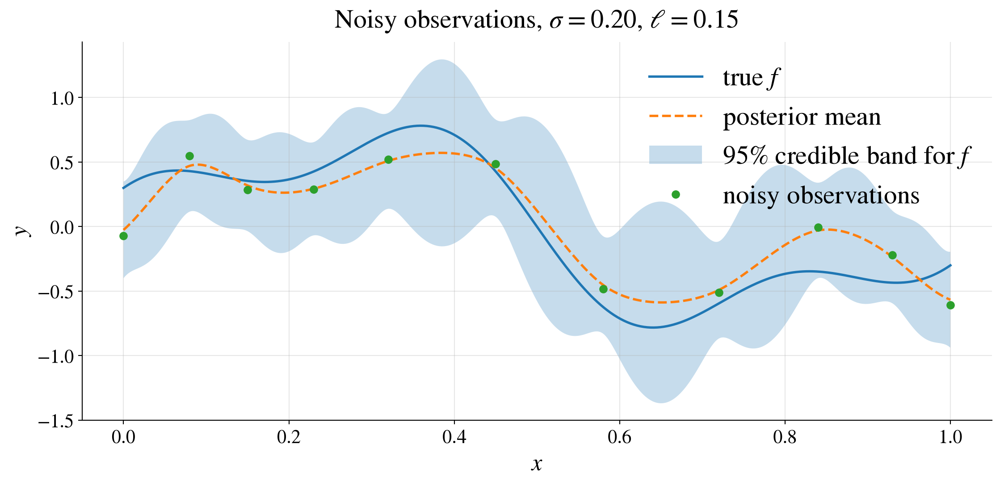
Adding a parametric mean
So far we assumed a zero-mean Gaussian process. More generally, write
\[ Y(\vx) = \vh(\vx)^\top\vbeta + g(\vx) + \varepsilon(\vx), \]
where
\[ g \sim \GP(0,K), \qquad \varepsilon(\vx) \sim \Norm(0,\sigma^2), \qquad \varepsilon(\vx) \text{ independent of } g \]
Here \(\vh(\vx)\) is a vector of chosen regressors, for example
\[ \vh(\vx) = \begin{pmatrix} 1\\ x \end{pmatrix} \qquad \text{or} \qquad \vh(\vx) = \begin{pmatrix} 1\\ x\\ x^2 \end{pmatrix} \]
Let
\[ \mH = \begin{pmatrix} \vh(\vx_1)^\top\\ \vdots\\ \vh(\vx_n)^\top \end{pmatrix}, \qquad \vK_\sigma = \mK+\sigma^2\mI \]
Then
\[ \vY \sim \Norm(\mH\vbeta,\vK_\sigma) \]
Prediction with a parametric mean
For a new point \(\vx_*\), define
\[ \vh_* = \vh(\vx_*), \qquad \vk_* = \begin{pmatrix} K(\vx_1,\vx_*)\\ \vdots\\ K(\vx_n,\vx_*) \end{pmatrix} \]
The joint distribution is
\[ \begin{pmatrix} \vY\\ f(\vx_*) \end{pmatrix} \sim \Norm\!\left( \begin{pmatrix} \mH\vbeta\\ \vh_*^\top\vbeta \end{pmatrix}, \begin{pmatrix} \vK_\sigma & \vk_* \\ \vk_*^\top & K(\vx_*,\vx_*) \end{pmatrix} \right) \]
Conditioning gives
\[ \Ex\bigl[f(\vx_*) \mid \vY ,\vbeta\bigr] = \vh_*^\top\vbeta + \vk_*^\top \vK_\sigma^{-1} (\vY-\mH\vbeta) \]
and
\[ \var\bigl(f(\vx_*) \mid \vY,\vbeta\bigr) = K(\vx_*,\vx_*) - \vk_*^\top \vK_\sigma^{-1}\vk_* \]
So the Gaussian process smooths the residuals after subtracting the parametric mean
Estimating the mean parameters
For fixed covariance parameters, the generalized least squares estimate is
\[ \widehat{\vbeta} = (\mH^\top \vK_\sigma^{-1}\mH)^{-1} \mH^\top \vK_\sigma^{-1}\vy. \]
Then the posterior mean becomes
\[ \widehat{\mu}_*(\vx_*) = \vh_*^\top\widehat{\vbeta} + \vk_*^\top \vK_\sigma^{-1} (\vy-\mH\widehat{\vbeta}). \]
Interpretation:
\(\vh_*^\top\widehat{\vbeta}\) gives the large-scale parametric trend
\(\vk_*^\top \vK_\sigma^{-1}(\vy-\mH\widehat{\vbeta})\) gives the GP correction
👉 the GP models what remains after the trend has been removed
Empirical Bayes with noise and a parametric mean
Now suppose
\[ \vY \sim \Norm(\mH\vbeta,\vK_\sigma), \qquad \vK_\sigma = \mK_{\vtheta}+\sigma^2\mI. \]
The log marginal likelihood, conditional on \(\vbeta\), is
\[ \ell(\vbeta,\vtheta,\sigma^2) = -\frac{1}{2} (\vY-\mH\vbeta)^\top \vK_\sigma^{-1} (\vY-\mH\vbeta) -\frac{1}{2}\log\bigl(\det(\vK_\sigma) \bigr) -\frac{n}{2}\log(2\pi) \]
For fixed covariance parameters, the generalized least squares estimate is
\[ \widehat{\vbeta} = (\mH^\top \vK_\sigma^{-1}\mH)^{-1} \mH^\top \vK_\sigma^{-1}\vy \]
Substituting this back gives the profiled log marginal likelihood
\[ \ell_{\mathrm{prof}}(\vtheta,\sigma^2) = -\frac{1}{2} (\vy-\mH\widehat{\vbeta})^\top \vK_\sigma^{-1} (\vy-\mH\widehat{\vbeta}) -\frac{1}{2}\log\det(\vK_\sigma) -\frac{n}{2}\log(2\pi) \]
Then empirical Bayes chooses \(\displaystyle (\widehat{\vtheta},\widehat{\sigma}^2) = \argmax_{\vtheta,\sigma^2} \ell_{\mathrm{prof}}(\vtheta,\sigma^2)\)
Interpretation:
\(\widehat{\vbeta}\) estimates the parametric mean using generalized least squares
\(\vK_\sigma = \mK_{\vtheta}+\sigma^2\mI\) describes residual covariance after removing the mean
the quadratic term measures residual data fit
the log determinant penalizes overly flexible covariance choices
👉 empirical Bayes chooses the trend, smoothness, scale, and noise level by maximizing the marginal likelihood
Ordinary kriging (constant mean)
A special case of the parametric mean is a constant:
\[ \vh(\vx) = 1, \qquad \mH = \vone, \qquad \vbeta = \beta_0 \]
Then
\[ \vY \sim \Norm(\beta_0 \vone,\vK_\sigma), \qquad \vK_\sigma = \mK_{\vtheta}+\sigma^2\mI \]
Estimating the constant mean
\[ \widehat{\beta}_0 = \frac{\vone^\top \vK_\sigma^{-1} \vy} {\vone^\top \vK_\sigma^{-1} \vone} \]
Prediction
For a new point \(\vx_*\),
\[ \widehat{\mu}_*(\vx_*) = \widehat{\beta}_0 + \vk_*^\top \vK_\sigma^{-1} (\vy-\widehat{\beta}_0\vone) \]
Interpretation
\(\widehat{\beta}_0\) is the estimated global baseline level
Gaussian process term models deviations from this baseline
👉 this is called ordinary kriging
Key property: constants are preserved
\[ \widehat{\mu}_*(\vx_*) = \sum_{i=1}^n w_i(\vx_*)\, Y_i, \qquad \sum_{i=1}^n w_i(\vx_*) = 1 \]
Therefore, if \(Y_1=\cdots=Y_n=c\), then
\[ \widehat{\mu}_*(\vx_*) = c \]
👉 ordinary kriging preserves constant signals
Noiseless case with parametric mean
The noiseless case is obtained by setting
\[ \sigma^2 = 0 \]
Then
\[ \vK_\sigma = \mK, \]
and
\[ \Ex\bigl[f(\vx_*) \mid \vy,\vbeta\bigr] = \vh_*^\top\vbeta + \vk_*^\top \mK^{-1} (\vy-\mH\vbeta). \]
If \(\vbeta\) is estimated by generalized least squares,
\[ \widehat{\vbeta} = (\mH^\top \mK^{-1}\mH)^{-1} \mH^\top \mK^{-1}\vy \]
In the noiseless case, the posterior mean interpolates the data, provided \(\mK\) is nonsingular
Big contrast with earlier models
- Transformations: change \(Y\)
- GLMs: transform the mean
- Nonlinear regression: specify \(f(\vx;\vbeta)\)
Gaussian processes:
\[ \text{do not specify } f \text{ explicitly} \]
Instead:
\[ \text{specify how } f(\vx) \text{ and } f(\vx') \text{ relate via } K \]
👉 Modeling moves from formulas to covariance structure.
Kernel ridge regression viewpoint
Kernel ridge regression solves
\[ \min_{f \in \mathcal{H}_K} \; \sum_{i=1}^n \bigl(Y_i - f(\vx_i)\bigr)^2 + \lambda \|f\|_{\mathcal{H}_K}^2 \]
Key points:
- \(\mathcal{H}_K\) = function space induced by kernel \(K\)
- penalty enforces smoothness
Solution has the form
\[ \hat f(\vx) = \sum_{i=1}^n \alpha_i K(\vx_i,\vx) \]
👉 This is the representer theorem in action.
The parallel universe of reproducing kernel Hilbert spaces (RKHS)
Every symmetric, positive definite kernel \(K\) defines a Hilbert space (complete vector space of functions with an inner product), \(\ch_K\), called a reproducing kernel Hilbert space
Key property:
\[ f(\vx) = \langle f, K(\cdot,\vx) \rangle_{\mathcal{H}_K} \]
Evaluation at a point is a bounded, linear functional
👉 The kernel encodes both
- similarity between inputs
- geometry of the function space
Let \(\hf\) be the minimum-norm function that interpolates the data, \((\vx_1, Y_1), \ldots, (\vx_n, Y_n)\)
Then \(\hf(\vx_*) = \vk_*^\top \mK^{-1} \vY\) (same formula as for Gaussian process regression)
GP vs RKHS viewpoint
Two perspectives on the same object:
| Gaussian process | RKHS / optimization |
|---|---|
| Random function \(f \sim \GP(0,K)\) | Deterministic \(f \in \mathcal{H}_K\) |
| Covariance = \(K\) | Inner product defined by \(K\) |
| Inference via conditioning | Estimation via optimization |
| Uncertainty quantification | Point estimate |
👉 Same kernel, two interpretations
👉 GP adds uncertainty quantification to kernel methods
Beyond Gaussian processes
The Gaussian assumption is strong:
- fully determined by mean and covariance
- light tails
- very convenient: closed-form conditioning
What if we want heavier tails or robustness to outliers?
Student-t processes
Replace the multivariate normal with a multivariate \(t\):
\[ \bigl(f(\vx_1),\dots,f(\vx_n)\bigr) \sim t_\nu(\vzero,\mK) \]
- heavier tails → more robust to outliers
- conditioning still possible (but more complicated)
👉 closest analogue to Gaussian processes
Other non-Gaussian process ideas
Scale mixtures of Gaussian processes
\[ f \mid \lambda \sim \GP(0,\lambda K), \quad \lambda \text{ random} \]
- induces heavy-tailed behavior
- retains much of GP structure
Stable process models
- allow heavy tails and skewness
❗ but:
- often no finite variance
- covariance/kernel no longer sufficient
- conditioning becomes difficult
👉 much of the GP machinery breaks
Most common approach in practice
Keep the GP prior, change the data model:
\[ f \sim \GP(0,K), \quad Y \mid f \sim \text{non-Gaussian} \]
- Bernoulli (classification)
- Poisson (counts)
- heavy-tailed noise
👉 inference via approximation (Laplace, VI, MCMC)
Takeaway
- Gaussian processes dominate because:
- simple linear algebra
- closed-form conditioning
- simple linear algebra
👉 beyond Gaussian, we lose this simplicity
© 2027 Fred J. Hickernell · MATH 563 · Prior-semester material awaiting revision